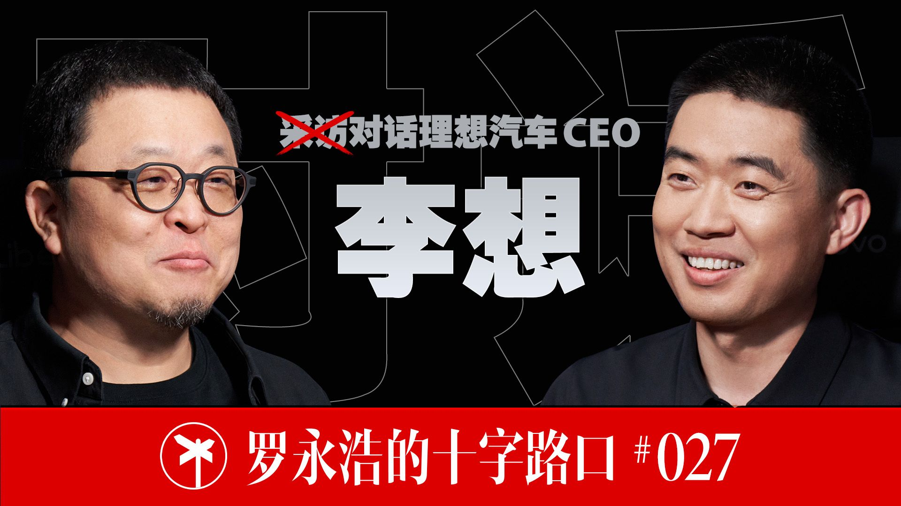

封面来自 B 站 @罗永浩的十字路口 PEOPLE · 罗永浩的十字路口
李想（AI专场）一个想用AI把"富豪生活"平民化、又坚信"AI在放大差距"的人
把过去只有富豪才有的生活，借 AI 给到几亿人。
罗永浩 × 李想（AI专场） · 全长 2 小时 22 分
一 他是谁 李想，1981 年生，石家庄人，高中学历，理想汽车创始人。这些第一期都讲过。
这一期他换了个身份说话：不是"造车的李想"，而是"要把一家汽车公司，整个重做成'具身智能公司'的李想" 。一句话定位——他是中国押注 AI 最重、最系统的实业创业者之一：自己做模型、自己做芯片、自己做操作系统，把"汽车"重新定义成"AI 时代的空间机器人"，并断言"自动驾驶是具身智能的上半场，人形机器人是下半场"。
二 他的生平（一句话） 泡泡网 → 汽车之家 → 理想汽车，连续创业成功，理想是国内唯一连续三年营收破千亿且盈利的新势力。这一期他几乎没回顾过去，只谈未来。
三 他为什么被采访 距第一期 200 多天，李想带着一套"阶段性成果"回来了：新旗舰 L9 Livis （自研马赫 M100 芯片、双芯 2560 TOPS、全线控底盘 + 主动悬架）、刚官宣的自研芯片、以及一次把整个研发体系"按人体结构"重构的组织调整。
但这期对谈真正的价值，不在产品参数，而在两个"产品经理"用大白话把 AI 讲明白 。罗永浩做过手机、做过 AI 应用，他替观众追问那些最朴素的疑问：AI 是不是科技圈自嗨？一个人公司成立吗？无人驾驶了车还卖得动吗？李想几乎每一问都用"我自己真用过/我们工厂真做过"来回答。说到底，这一期想搞清楚的是：一个把车卖好的人，凭什么相信 AI 能让他再造一个更大的理想——以及，他对 AI 的判断里，藏着哪些和大众想象不一样的东西。
四 他代表哪一类人 他代表这样一类中国科技创业者：不满足于把 AI 当成给产品"加 feature"的工具，而是要拿 AI 把公司的底层重写一遍——从组织架构到芯片到商业模式。
更具体地说，他代表"靠一个能盈利的硬件主业（车），去供养一场极其烧钱的 AI/机器人豪赌 "的那种人。他在访谈里反复点破一件事：纯做人形机器人的公司，最大的难处是"什么时候能商业化、现金流靠融资能不能撑住巨额科研投入"；而他、小鹏、特斯拉这类"先造车、后造机器人"的，天然有车的利润和真实的工厂/商业场景做地基 ——"在家里买机器人的，和买 L4 自动驾驶车的，90% 是同一波人"。
这类人是今天最该看的样本之一：他证明了 AI 时代的护城河，可能不在"模型多强"（模型是竞争力但未必是壁垒），而在你有没有一个能持续造血、又能提供真实数据与场景的实体。
五 他的普通与不普通 先说接地气的一面。 他自陈"宅男"、爱打游戏、重家庭；他社恐，要下很大决心才能去面试，承认这是"臭毛病"；他在浴室淋浴的地方放个防水蓝牙麦克风，就为了洗澡时突然想问个问题能随手记下来。这些都太像一个普通的中年技术宅。
再说不普通。 他的特别，在于几样东西：
一是亲自下场用到极致 。过去 200 天他做的"最重要的事"就是学 AI——不是听汇报，是自己天天用 Claude Code，还像"病毒"一样挨个给同事的电脑装上，连合伙人樊铮都被他堵在家里装好。他不相信"听别人讲"的 AI，只相信"自己手上跑过"的 AI。
二是把抽象判断落到可验证的细节 。他不讲玄乎的 AGI，他讲：L3 需要约 2000 TOPS、L4 要近万 TOPS 得等 2028-29 年；机器人第一个战场不是炫技的人形，是"会移动、会取放的 AGV"去干上料搬运；线控制动比机械快 50 毫秒，关键时刻能差出"一个全尺寸 SUV 的车身长度"。
三是敢在逆境里讲愿景 。2025 年理想交付、营收、利润全面下滑，智驾高管批量离职——恰恰是这个时候，他高调地把公司重新定义成具身智能企业。顺境讲产品，逆境讲愿景 ，这既是他的赌性，也是他的底色。
六 访谈里的"金矿"：几个反认知的洞察 这是最该带走的部分。
1. 同一个人，一边说"AI 让普通人过上富豪生活"，一边坚信"AI 在放大差距"。
这期标题主打"用 AI 让普通人过上富豪的生活"——听起来是普惠、平权。但李想另一面的判断恰恰相反："过去是 20% 的人顶级、80% 普通，有了 AI 加杠杆，可能变成 2% 顶级、98% 普通 "；"AI 像放大镜和显微镜，让能力差异更透明"。这看似矛盾，其实是他把世界切成了两层：消费/服务层会被 AI 拉平 （人人买得起豪车体验、人人有 AI 助手），生产/创造层会被 AI 拉开 （用 AI 创造价值的能力两极分化）。一句话——AI 让你"享受"得更平等，却让你"创造"得更不平等。
2. "私人司机"不是比喻，是产品定义。
他把自研的 VLA 直接叫"司机大模型/司机 Agent"——目标是"像人类司机一样工作、将来像人类司机一样创造商业价值"。他对十年后的描述很具体：过去只有超级富豪才请得起的保洁、家政、司机、生活助理 ，要靠 AI 和具身机器人，"给到几亿人、几十亿人也能消费"。所谓'富豪生活平民化'，落到产品上就是：把'雇一个人'变成'买一台机器'。
3. 机器人的第一桶金，是"上料搬运"，不是拧螺丝、翻跟头。
满世界的人形机器人在演示拧螺丝、跳舞、马拉松，李想却说这些"找不到商业模式"——拧螺丝早自动化了、要的是微米级精度软臂根本做不了。他在自己一万多人的工厂里看到：真正大量、又一直靠人干的，是给机器"上料"、把物料搬来搬去 。"一个长着手臂的 AGV"虽然不够酷、不好融资，却是机器人从 0 到 1 最大的真实战场。别被炫技骗了——真需求往往最不性感。
4. "一个人公司"不成立，但"三五个人的大公司"很可能成立。
他一度也信"AI 会催生一个人的公司"，自己验证一段时间后发现：AI 既是生产力又是劳动力，它必须接在一个真实的生产环境里才有反馈 ——而一个人根本搭不起稳定的生产环境。"个人玩着玩着就没意思了，因为没有生产的反馈。"但三五个人、十几个人借 AI 做出一家大公司，他很乐观。AI 不是让你"不需要组织"，而是让"很小的组织"能办成过去很大的事。
5. AI 是"照妖镜"：裁员时最容易误杀的，恰恰是真高手。
他建议"所有公司不要急着裁人"，因为 AI 时代的人才标准和上个时代大概率不一样 ——你一上来按旧标准裁，很容易把最好的人裁掉。他观察公司里 Token 消耗最高的那批人，发现他们往往"脑子极强、但嘴跟不上脑子"，过去抢资源、见人说人话很吃亏、越来越不爱说话；可他们跟机器对话毫无障碍，正在把整条业务重构。旧时代"会表达"是稀缺能力，AI 时代它不再是门槛——别用旧尺子量新人才。
6. 把组织"按人体结构"重新拆一遍。
理想把研发重构成：基座模型（大脑）、软件本体（手脚）、Infra（心脏/算力数据）、硬件本体、独立评估。背后是一条铁律——做模型的别碰 Agent，做 Agent 的别碰模型 。他打了个刻薄的比方：做 Agent 的老想自己搞个小模型，"像低级动物手脚上非得长个小脑"；做模型的老想下场做应用，"像恐龙那样大脑配副小手脚"。分工不是按功能，是按'能力的器官'——这是他从 Anthropic 的组织里抄来的作业。
7. AI 把决策从"一言堂"变成"选方案"。
他自己用 Agent 的习惯是：先让 AI 做分析、出多个方案并打分、再优化，最后他来"选"。这套习惯长到团队里，就变成"大家在方案里选，而不是老板说一二三"。好处很反直觉：AI 出方案时天然带着反向意见，把博弈直接摆上桌 ——性格懦弱、不敢跟领导提不同意见的人，现在能拿着 AI 的分析去谈，心理负担小多了。"一言堂、没有反对意见"这个老问题，被 AI 顺手解决了。
8. 真正输不起的，只有"战略预判"。
被问到理想未来最可能栽在哪，他答得干脆：战略预判 。逻辑是看"调整周期"——组织和管理出了问题，花两三年还能调回来；但战略选错，"你连调整的机会都没有了"，就像柯达。其余的事都能快速迭代，唯独方向上的"何取何舍"错了，回头已来不及。选择比努力重要，在这里不是鸡汤，是按周期长短算出来的硬约束。
9. AI 已经"全知"，但还没"全能"。
他给现在的 AI 一个精准的定位：半神 。"全知全能的叫神；他全知能做到，全能还做不到，所以是个半神。"他每天给团队布置完任务，自己也会偷偷再问一遍 AI，省得开会时现找东西丢人。把 AI 当"半神"用——信它的'知道'，但别全交给它的'做到'。
完整对话 · 全长 2 小时 22 分
开场：200天，把自己变成“AI病毒” 罗永浩：
欢迎大家收看罗永浩的十字路口，最重要的是一键三连和加关注，还欢迎随时发送弹幕评论跟我互动。今天请到的嘉宾是理想汽车的创始人李想，我们十字路口开播的第一期嘉宾就是他。时隔200多天，他完成了汽车公司转型、走向AI和具身智能公司的阶段性工作，并带来了全新的智能产品——理想新一代的旗舰SUV L9 Livis。L9 Livis配备了理想自研的马赫M100芯片，还有全球首个完全体全线控底盘，以及800V主动式悬架系统。前者提供了目前量产的智能电动车当中最强的算力，算力达到了惊人的2560 TOPS；后者在50万元左右的档位上，提供了百万甚至数百万元的豪车上才能享受的驾乘体验。罗永浩的十字路口第二期，我们和李想聊聊他的全新旗舰SUV，聊聊他逐渐成型的AI加具身智能公司，也聊聊他事业上的终极理想。
这坐着挺熟悉啊，跟我家里的一样，他这个椅子确实做得不错。我是第一批的用户，而且他们很聪明，送了很多科技公司的老板，老板们喜欢，经常就会给员工买这个。
罗永浩：
我先得按一下这个，然后我们录制的时候它会自动做跟踪，它能跟着我的身姿来追踪的。
罗永浩：
行，那我们开始吧。好，距离咱们上次聊已经有200多天了，时间过得特别快，然后这段时间你怎么样？
李想：
我觉得这200多天其实最重要的还是学AI。因为AI这东西你不能听别人讲，你得自己真正去用，因为它的范围太广了，而且不同人用出来是不一样的。所以一方面我自己在用，另外一方面我也像一个病毒一样，再让同事们
李想：
对，而且那也能观察，然后看看大家用起来以后，在这个社区里边每个人大概使用的状况是什么样子的。所以我觉得过去的200多天，很重要的一点其实是对AI持续的认知和学习的一个过程。
李想：
非常多，而且本身装这个，从装Claude Code到装OpenClaw，都是从我来做起的。
罗永浩：
这个过程里有没有感觉，那些越是自身（资深）的越不爱学新东西？
李想：
当然了，有这个问题，对吧。最严重的就是我身边的朋友，跟我关系最好的，原来其实是车和家的CTO樊铮，他是绝对的技术达人，所有东西都要最新的，但我给他讲Claude Code讲了很多遍，他都不用。所以我想了一个办法，去他家给他在电脑上直接装，我就给他装了Claude Code。然后他说买20美金的就可以了，我说你肯定不够，他说我又不拿AI做什么事，结果第二天上午还没结束，他当天的那个额度就用光了，从此就去了。但是后来他用起来就完全不一样了。所以就有点像当时iPhone一样，很多人拒绝iPhone，但是你只要拿着iPhone让他用一下以后，其实就不一样了。所以我就开始在公司里给我能装的所有人去装。
罗永浩：
还有，我们在科技行业天天聊，也聊得这么热乎，然后公众的反应是觉得好像是科技圈的人在自嗨。这个让我想起来，我当年刚玩PC的时候，就486那个时代开始买的PC，那个时候其实什么都不好用。你记得那时候要处理个汉字，在DOS时代还装一个硬件的汉卡，你记得吧。所以那个时代其实PC已经很强大了，能做的事情也狂多，但是大家总是觉得这个东西不好用，所以就变成要么就技术圈的、要么就极客圈的用得很嗨，然后老百姓听到
罗永浩：
讨论得很热闹，然后跟着买一个，又发现哪哪都难用。我现在觉得AI就是这么一个阶段。
李想：
对，我就觉得现在阶段能看到AI有两个分支还挺明显的。一个分支其实就是大家有了AI以后，把它当成一个更加泛化的搜索工具，就获取信息，这个其实豆包做得非常好，普通的C端消费者其实最容易使用。我们今天讲的无论是Claude Code、Codex还有OpenClaw，其实是Agent，但Agent有一个挺重要的一点，就是Agent非常需要一个完整的工作生产环境，它必须得有你真实的任务生产环境，你才能获得良好的反馈，才能获得整个工作链条的一个结果。普通的用户玩着玩着其实就会没意思了，因为它没有一个生产的反馈。比如说我看我们的同事，大家有了这个，做得好的比如一天能消耗上亿token的，他干什么呢？他在把他的业务进行重构，把原来这些不舒服的业务流程什么的，都拿Agent、拿coding自己来重构了。那我都说，那你每天多花三五个小时你不累吗？他真实的状况说，他感觉比较像玩经营游戏，因为自己能闭环了，有点像玩我的世界、玩这个模拟城市。但普通的个人他是没有这种环境给反馈的。再加上Agent去做那种智能代理操作，那些其实现在也受到旧世界的那些软件权限的壁垒，所以导致小白用户想尝试用它去操作几个，发现也打不通，而且本来尝试做打通的又都被封杀了。
罗永浩：
然后我们这个播客里边AI可能聊得有点多，我们包括找那个文艺界人士来也会聊AI，因为AI也可以做文艺创作。结果聊多了以后，我们观众的反馈是说，你们就是自己去嗨得了，
罗永浩：
不要老铁，我们也没兴趣。然后他们没兴趣的原因，就是他们觉得现在也干不了啥。所以我一直也在想这个问题，这个什么时候能让小白用户也感觉到，他除了问问题和搜索这些以外，还有巨大的那些能量？这个东西什么时候能感知到？
李想：
我觉得不太容易。为什么呢？因为我觉得这一波AI的最大的变化，其实它既是生产力又是劳动力。生产力和劳动力最大的表现其实就是提升效率，比如coding提升效率了，大家去——你看今天谁的订阅已经到了400多亿美金了，对吧，它没有什么太多情绪价值。所以我觉得这个阶段还是生产力，它非常依赖技术本身。它是生产力加劳动力，本身就必须特别依赖于生产环境，所以有生产环境的大家干得可带劲了。但是呢，你一个个体怎么构建生产环境？包括很多人说有了AI以后会出现个人公司，我开始也这么信的，但做了一段时间我发现不成立。
李想：
挺难的。所有的在B站上还有在小红书上给大家做分享的，开始都是说以后就出现个人公司、个体公司，一个人的公司AI怎么怎么样。那我都是说我自己来验证这个一个人公司，但验证了一段时间以后发现，他每天更新的内容就是"然后OpenClaw又更新了，又解决了什么bug问题"，那他们自己实际的生产环境并没有建立起来，因为建立一个稳定的生产环境太难了。
罗永浩：
但你对那种三五个、十来个人做一个大公司这件事乐观吗？
李想：
我觉得还是看整个生产环境的构建。因为AI是付诸于一个真实的生产环境，它并没有凭空造出来任何东西。我们自己内部做的很多实验，其中包括一个成熟的大型的软件，比如说有七十万行代码的，我们用Claude去尝试自己去复制一个，
AI是生产力+劳动力：“一个人公司”为什么不成立 李想：
但是要重新写，然后直到调教到能用为止，发现效率确实挺恐怖的。
李想：
是，而且能调教到可用为止，也就一个人做了一个多礼拜，反正这个效率是挺恐怖的。所以我对将来一个人的公司我也不乐观，但是三五个人、十几个人做一个大型公司还挺乐观的。我再讲讲为什么一个人公司不乐观。因为在我们公司，大家token是可以放开去用的，因为我认为至少到今年年底，token的消耗都相当于是一个认知的过程，所以我会看公司内部的token消耗量，然后前20的这些同事们，我就会跟他们来具体聊你们真实在干什么东西，大概什么样的一个理解。发现就是排在前面的token消耗的这些人，没有白给的，非常有意思。它有几个特点：第一个特点，它并不是我们常规想象的公司里那些原来的标准下最顶级的员工，比如他表达能力过去不强，他获取不了什么资源，但他脑子极强。所以才来只要有token，有业务环境，他就可以去改造一切。
李想：
是的，然后我就支持。所以呢，我的一个建议是所有公司不要裁人，因为在AI时代的人才和你上个时代的标准大概率是不一样的。你上来就裁人，很容易按照上个时代的标准把最好的人裁掉了。
罗永浩：
但现在很多重度用AI的企业裁人，不就是因为有的人不愿意学，或者是下意识地或有意地就拒绝学新知识才裁掉的呃？我们公司裁了不少这样的呃。
李想：
呃，我还没有发现就是你给了AI以后他不用的，我们发现还是大家都是喜欢去用的，只是过去的时候没让他迈这一步，因为迈这一步挺难的。
罗永浩：
你们是花了很多精力push他们去用这个吗？就是必须给现成装上
罗永浩：
装上Claude Code和OpenClaw。我们也做了类似的事，但是反正好像粗略的感受是越自身（资深）的越不太愿（去用）。
李想：
我觉得今天我没有办法定义，还是先是个认知过程，就是避免过早地把认知定下来。那我觉得第二个，其实也跟一些舆论上讲的不一样。比如说一些专业的工作被替代，我说这是我真正使用以后觉得最胡扯的事情。
李想：
就一个普通人做出来的那个代码，那个可用性差到极致，更不要说往大规模去部署了，那基本上对他们来说就是个灾难。
罗永浩：
这个我也看到你之前网上提过，就大概意思是说专业人士用它能放大，从原来比普通人强个十倍一百倍，现在可能变成千倍万倍。
李想：
我说原来是两三倍，现在其实十倍一百倍。我就举一个最简单的例子就很清楚，比如大家都能用Seedance，那我们公司的专业人员拿Seedance做出来的那真的非常好。那你会发现今天还有一个有效的过滤器：你身边很多的朋友拿Seedance做出来很垃圾的东西发给你，你原来没那么讨厌这个人，你现在还是讨厌这个人了，对吧。就虽然大家也会了，但是大部分人如果不是专业，都是民科水平的，对吧。所以这个其实跟大家想的不一样。那最后我们就讲AI的时候，AI可以看到各种好处，但是我觉得AI现在其实在工作上——不是讲个人怎么去玩——在工作上还是能看到三个比较严重的问题。这三个问题其实就是那些token消耗量最大的人提出来的。第一个，其实今天所有的AI的工具都是满足个人的，在工作协同上其实是非常差的。那怎么来实现工作协同，包括跟现在的这些软件进行协同、跨部门，因为也是一个生产链条，这一个链条你光一个局部高、其他地方不行，就跟供应链是一样的，
AI暴露的三个工作难题 李想：
你最后东西产生的价值还是非常有限的，对吧。只有局部的价值，没有整体的价值，这是大家第一个挑战。第二个挑战其实是数据的获取，对吧。因为也没有必要再用传统SaaS或者IT的方式去读取数据，最好的方式直接进数据库读，对吧。因为数据库可以想象成是个四维的数据，但是正常我们人类看的IT是个二维的数据，但是AI读四维数据是没有任何问题的，带着时间轴任何维度的，对吧。那这个到底怎么去读、数仓应该怎么管理，就变成一个很大的挑战了。我觉得第三个，这些人又提到一个，说那我的工作价值怎么被衡量，在新的这个方式下，虽然今天我能学到很多东西、反馈很好。基于这个，我就发现其实还有一个有意思的事情：很多人说什么搞研究的，比如搞战略研究的、搞商分的这些人其实就不需要了。那我就把我们一起看到的这三个问题，给到我们的战略团队，让他去搞研究，就是我们怎么解决这三个问题，然后我们去看一看全世界最顶级的公司比如Anthropic、比如OpenAI，它到底是怎么来做的。到最后结果非常惊讶。
李想：
就是我们其实就是一个战略小组的负责人带着几个校招生，然后他们去研究的时候，直接把Cowork复制了，这是非常离谱的。为什么？因为他们在看Anthropic工作的时候发现，这家公司不做传统的PRD文档这些东西的，他会直接去做可验证的demo。所以他们说如果是这样的话，我为什么不直接把这三个需求做成一个可验证的demo？所以他们就直接复制了一个完整的Cowork出来，没有用任何的开发人员，并且跟着我们的HR把刚才讲的工作的连通做了demo的验证，然后又跟着我们的数仓团队把整个数据怎么打通、哪些用云端模型、
李想：
哪些用一些本地模型，然后来做，包括一个人在上面工作怎么衡量，都做了个demo。
李想：
工程师没介入，是验证完了以后，后边工程师去做专业的开发，因为你还要做大规模的全员的部署。所以我就说，如果我们按照正常的反过来说——这个商分的人不需要了、战略研究的人不需要了，然后这些像我这样的人自己拿个Agent就能把这些做了——其实我做不到这种程度，那我们可能又把最顶级的人才给送走了。
罗永浩：
但这个现在不是很多企业在这么做吗？我们现在也是，产品经理主导一个东西的时候，以前李想会很谨慎嘛，因为你怕那些（资源）都浪费到无意义的事情上，现在是给产品经理充分放权，他有什么想法他就直接去验证，然后他拿出来一个能操作的东西，这个代码都自己弄的。我们就等于以前是拿着设计稿、还有什么快速可视化的动画、还有一些PRD那些来讨论，现在是直接做一个能用的东西，只不过它最终还是要给工程师去实现，因为还有很多技术上的细节不太会，比如说这个能在本地跑起来了，但上线以后如果有海量用户的话，它什么压力测试这些还是要工程师来把握。
李想：
但这个不是常见做法吗，是我们连硬件都这么做了，我们连硬件都是在一个Agent的虚拟环境里边跑通了然后再去开发的，不只是软件了。但是我刚才讲的一个很大的问题，说那我不可能让一个产品经理把这方面的战略研究做了，我也不可能找任何一个业务负责人。所以我还是说其实专业的人在今天仍然有巨大的价值，只是不是原来标准化的、给你做一些文档的价值了。我的一个观点就是说，其实专业的人只要他能用好AI，价值可能是一个新的高度，并不是说我找一些人把原来这个替代了——替代原来的东西其实没什么难度，
具身智能不只是人形：会动的机器都算 李想：
但是呢，今天的专业的人有了AI以后，他会进入到另外一个高度上去，这个高度如果不是专业的人其实替代不了的。
罗永浩：
是，这个我也同意。但是以前比如说一个战略调研的一个主管可能带着十个人工作，现在他可能只要有一个人就差不多了，这个事你们那也会发生吧？
罗永浩：
明白，所以你们还没有出现因为AI的大规模应用导致某些岗位就开始裁掉这种现象。
李想：
我觉得两个方面。我觉得其实任何一个企业发展有两种可能性：一种可能性其实是它这个行业、这个规模可能遇到屋顶，这是行业的问题，那它需要通过降本来解决问题；我觉得还有一种可能性，比如说我们看到的话，汽车我们才做了一点点，后边还有机器人，这种可能性就是我们还是希望这些人能不能乘以一个五到十倍的效率。今天我拿三万人做一千多亿的收入，我的看法是有没有机会拿三万人做一万亿的收入，看个五到十年。
罗永浩：
所以用AI主要是用于增效，而不是降本，对吧？因为这个产业规模足够大。
罗永浩：
在市场上明白。最近一直在聊具身智能的问题，我想我们这个定位还是非专业的、非科技专业的博客，所以想给大众讲一讲。因为老百姓一说具身智能首先就知道机器人，你先给我们这个节目的普通观众解释一下，这个广义的具身智能应该理解到什么程度？因为大家以前说具身智能理解就是机器人。
李想：
我觉得就物理世界里所有的机器，给了它模型和大脑和眼睛以后，然后它来工作，就是能智能地动起来，用AI来做操作的这些硬件都可以叫具身智能。或者我们看变形金刚里面，对吧，车的形态它也是一个机器人，人的形态也是个机器人，还有飞机的形态也是个机器人。我觉得就是所有的机器，
李想：
在未来真正给它赋予了眼睛、大脑和心脏，分别其实是传感器、模型和处理器，我觉得它就是个具身智能。
罗永浩：
大家老觉得做车的又聊机器人好像不争（不沾边），但是你这个变形金刚这个角度很好，变形金刚就是又是汽车又是机器人。
李想：
但是我们人类真要去做这些东西的话，肯定是做两个，成本远低于拿一个去做变形的。我觉得就还是要看效率，毕竟金刚里面也非常有意思，就是他在行动的时候都是车的形态，因为如果是人的形态在路上，轮着快，（人形）效率很低，但是在打架、开会的时候是机器人的形态。我觉得今天这世界也是一样的，因为这不是所有东西都一定非得是这个人型机器人去做。比如说我前两天就看了个特别搞笑的一个事情，就是拿人型机器人做咖啡——咖啡机不就能直接做咖啡了吗，为什么要拿人型机器人做咖啡？但是呢，我们能看到其实一个咖啡机你让它真正的自动化以后，其实它也是一个某种功能的功能机器人。但是呢，其实最难的是真正需要人——什么呢？真正需要人型机器人是给它上料。因为我们公司里边有很多的咖啡机，但是都是靠人去上料，给它加牛奶加什么的，但这反而是人型机器人干不了的，今天是。
罗永浩：
以前我看过孟山都的一个宣传片，就是一个农夫、美国的一个高科技农夫，坐在自己的屋里拿着一台电脑、拿个鼠标，然后能种我不知道上百亩还上千亩，反正很恐怖的那个面积的土地做耕种，然后包括将来收割全部是自动化，拿鼠标在屋里点点点。但是他跟记者说，最讨厌的就是上料，就是你要播种，那个车放在那，
机器人最大的商业机会：上料与搬运 罗永浩：
他在屋里可以用鼠标操控，但是往里边上种子啊什么这些还是要人弄。对这件事是无解的，或者是长期无解的吗？
李想：
我觉得这是商业机会啊，这是个最大的商业机会。今天大家在搞人形机器的时候，其实是找不到商业模式的。什么人形机器人去做分拣？分拣有摄像头就直接流水线就直接分拣，干嘛需要人分拣，对吧。包括刚才我讲的这个咖啡，那不需要人来做，对吧。然后包括在工厂里边很多时候拧螺丝——我说拧螺丝都已经是自动化的东西了，对吧。但是工厂里需要——我们工厂里边一个工厂我们一万多人，有三千多人是给这个机器上料的，是把这些零配件放到AGV上的。包括说楼里边那么多自动咖啡机，那唯一保留的运营人员就是这些上料的。所以我觉得我就看到了，无论是工业的场景还是商业的场景还是家庭的场景，其实相反这件事情，是我认为可能真的是具身机器人从零到一的第一个重要的战场。本质上是什么呢？本质上就是把今天我们看到了很多的这个仓库里的那些机器人，因为就是运输和取拿，然后放在一起。过去的时候我们工厂都是AGV运输、人再取拿，以后只需要一个简单的（设备）能运输能取拿，然后工业场景也需要、商业场景也需要、甚至家庭场景也需要。我觉得这可能是最早的机器人的大规模商业化。
罗永浩：
这块做得比较差，是不是因为这块实际上想着简单、做出来的难度要高得多？就比如说你在流水线上那些固定的东西，不管它是人形还是非人形，那些固定的东西用机器相对容易实现，或者是至少前半段已经跑出来了。但是人去上料、下料这些东西，
罗永浩：
我们理解起来是简单，而且用工的话这个人工也不是很贵的，因为它是比较啰嗦和低技术含量的工作，但是真要用人形机器人做或者用类似的机器人做，可能想着简单实际上非常复杂。不是这个原因吗？
李想：
我觉得可能真的大部分的机器人创业者并没有在真实的商业环境和工厂环境里。我只要在工厂环境里转一圈就知道，到处都是可以替代的。它既然是生产力加劳动力，那请问生产力和劳动力最多的、最容易被替代的是什么，对吧。那你为什么非得要去替代制造呢？因为制造需要的是精度，不是毫米、是微米级的精度，你今天的这些软臂根本做不了微米级精度。但是搬运、上料不需要那么强的精度，而且一个工厂里单一工种的用量就是最大的。
罗永浩：
明白。我觉得这个其实还是得有非常丰富的这种真实的工厂或者商业环境的经验。我怀疑还有一个原因是不好融资，就是你去打一套花里胡哨的拳，或者是演示一个耍杂技一样的东西，可能对融资那个冲击比较大，但你去做这些东西（不好融资）。另外还有一个麻烦是，你是刚好又做生产制造、然后又想做机器人的，所以你自己很天然的就可以又是产品经理出身，所以很自然地把它结合在一起去考虑。但那些（其他）的公司他要深度地给自己的客户去定制这个产线上的需求或生产环境里的那个需求，可能没有那么方便，或者是这个协同比较啰嗦，你知道我意思吧。
李想：
我觉得两方面吧。第一个方面是从来没有人问过我们到底需要什么。比如我作为一个工厂的厂主、作为一个我们有接近1000家店的商业环境，并没有人来问我们，但他们就想说我帮你去工厂拧螺丝，我说我完全不想拧螺丝。
李想：
拧螺丝就是现在人都不拧螺丝了，都是机器拧螺丝了对吧。第一，没有人来问我们这些需求；然后我觉得第二个，也可能真的是我说的，就是说做这东西看着可能不够酷，因为它就是一个长着手臂的AGV，只是它比今天在物流领域的要有更好的移动的泛化能力，有更好的取拿的泛化能力，以及跟环境和人沟通的泛化能力，这个技术要求上一个等级，但是从外形上看着又不够酷。
罗永浩：
好像亚马逊做那个是人形还是轮足的，我也忘了。就亚马逊做那个，他那个物流的配送和那个仓库里边存取那些，那很成熟了。那个是不是也是自研的吧？
李想：
我记得有的是自研的，我看国内的像他们也都会用第三方提供的。
罗永浩：
（广告口播）想聊得好咖啡不能少，感谢合作伙伴瑞幸，把瑞幸咖啡店开在了罗永浩的十字路口。办公用的产品通常会保证功能，但很难做到用户体验良好并赏心悦目。Insta360的这款Wave从功能到设计到使用细节都做得非常好，内置AI芯片配合360度拾音，既能把声音收清楚，还能用自带的软件把几小时的冗长会议自动总结成精炼的纪要。选择搭配这个会议摄像头的版本用起来更是厉害，听声辨位，谁说话摄像头就自动拍谁，真的假的？看来是真的，特别适合远程多人会议，强烈推荐想提升会议效率的团队使用它。Insta360 Wave好用又好看，高科技又高效率的AI会议麦克风。
罗永浩：
你是车企里现在第一个宣布就是要彻底地转型做AI和具身智能的，然后这个决定是怎么说呢，是一个怎么样的一个思考过程？
上半场自动驾驶，下半场人形机器人 李想：
我们就是把这个绕了，其实具身智能它是很清晰的定义，也不想发明一个新的名词了。那如果按照顺序的话，特斯拉肯定是第一个，我说国内新能源，那我们基本上跟小鹏差不多的。
李想：
对啊。其实你只要做了自己芯片、做了自己模型以后，你看到这个世界往下的进展，其实就相对会比较清晰了。我觉得不用非得把车和机器人分开，我拿一句话来讲明白。如果今天看这个物理世界，看这个具身，然后从最大的产业的角度来看，也会有很多细分，但看最大的产业，那基本上可以这么描述：就是自动驾驶是具身智能的上半场，人形机器人是具身智能的下半场。而且这两个连接的关系，我们能看到其实非常清楚的，就包含为什么机器人公司要从自动驾驶公司挖人，也是因为这是一个合理的路径。
罗永浩：
那那些不一定是人形的各种各样的具身智能呢，你认为那些将来是相对小的份额吗？
李想：
我觉得它还会有市场的细分。比如说今天我们如果看这个电子产品，那肯定PC和手机是最大，那中间也会有Pad的，也会有手表，会有很多这个。
李想：
肯定是最大的，因为这两个基本上都是5万亿美金的，就是成型以后都是5万亿美金的规模。那汽车的话，如果再简单讲，我觉得今天大家已经能明白了，因为今天大家买的，比如北京车展90%以上的车都在辅助驾驶了，那我就可以把这东西讲明白了。就是整个自动驾驶有三个阶段，今天在第二个阶段。第一个阶段就基本上应该从17年18年到22年23年，就是辅助驾驶。那辅助驾驶成型的时候，几个关键的技术：第一个就相当于眼睛，它用的是CNN的2D，就是神经网络的2D的这种视觉；然后第二个，用了规则算法模型，就一帮人在写规则；然后第三个，
自动驾驶三阶段与 L3／L4 时间表 李想：
用了传统的通过这种控制器MCU控制器控制车辆的执行，并且配合一个大概几十TOPS的一个算力，就像Mobileye EyeQ4、地平线的征程J3、征程J5这样的。我觉得这是第一个阶段。那这个基本上今天已经成长为一个几千亿的，在中国就是个几千亿的一个产业，90%的车都配了，而且大家有这个东西没这个东西，已经会完全影响购买汽车了。那我觉得从2022年到2023年，然后再往后这五年，基本是一个走向L3的阶段。L3定义就是自动驾驶，但是人要坐在车里，因为它的聪明程度和方法能力还是不够处理那些各种未知的，但在道路上安全性是没有问题的。那这个技术发生了变化，就是眼睛变成了拿Transformer做的，这个Transformer出来以后，拿Transformer做的2D视觉，我们叫2D ViT；然后第二个，主要的这个模型，因为芯片的这个算力还不够，所以本质上大家放了一个预训练的，有个叫VROI叫世界模型，但主要的训练是靠模仿学习，就靠后训练的模仿学习，就是为车的这些数据，看到了什么图像就做了一个什么样的一个结果。
李想：
第三个，控制就变成了直接一个端到端了，就是视觉就直接到这个车辆的轨迹控制。并且这个芯片，但是模仿学习只要你压了模型规模，最多大比如说到了4B到7B的时候，L3也能实现。所以基本上大家可以看到，目前的2000 TOPS左右的算力，在未来的这个一两年里边，就大概可以实现L3了。那这个其实又是一笔巨大价值，我觉得这可以产生一个，光自动驾驶一块就是个上万亿的一个产值。那我觉得再往下最难的，就是基本上27年28年再往后5年，是L4的无人驾驶，因为无人驾驶就是个真正的机器人了。那这里边我们已经能看到技术的变化了，但今天有各种的限制其实做不到。第一个，它得变成3D ViT，就像人看这个三维的世界是一样的。
李想：
第二个，其实最难的一点，也是整个具身里最大挑战，就是具身必须像当时GPT3.5一样，有一个稳定的预训练模型，就是一个面向物理世界的预训练的一个模型。有了这个模型以后，你后边讲的所有的合成数据生成才能成立。那我觉得这个其实是一个关键，后边的所有的后训练，哪怕我为的是人类的数据，但它最后也是个理解学习而不是个模仿学习。第三个是所有的控制系统要比人还要更快，因为只要快就安全，只要快，人类无论是理性的还是感性的，都能感觉到安全，人才能相信。其实人的反应能力很一般，你看我们跟猫比，差距是非常明显的。然后这样的话，基本上我认为大概得有一个近万TOPS的算力，因为基本上你一个稳定的预训练模型能够形成一个可运行的模型跑到端侧的时候，基本大概13、14B，那再考虑到要有一个10帧、10赫兹左右的一个推理的算力，不是感知，那就基本上大概得到接近1万TOPS的一个算力了。
罗永浩：
我们单颗才1000多TOPS，你是说它必须用单芯片实现？
李想：
也不是，但是你堆不了那么多芯片，因为你在网上堆的话，你的带宽不够了就有问题了。
罗永浩：
带宽就有问题了。所以现在主流的比如说各家的旗舰的能到多少TOPS？
李想：
Thor-U就是个单芯片，市面上主流的是那个Thor-U。你这个最新的这个Livis呢？
李想：
我是两颗芯片，每个1280，加起来2560 TOPS算力。所以这个要单芯片实现上万它不是，还要多久？我觉得得28年29年吧，28年到29年。双芯片单芯片肯定做不到。然后我觉得这个基本上L4的就实现，因为L4实现就是个真正的机器人，包括它的运营也会更难了，因为它车上没有人了。我们不是像今天的自动驾驶的Demo跑个50辆车100辆车，我们是上来就上百万辆车。所以我觉得到了第三个阶段，
无人驾驶了，还会买车吗 李想：
就是无人驾驶的时候，基本上汽车市场才能向手机市场收敛，比如国内就剩下五家，就是华为、小米、荣耀、OPPO、Vivo。那我觉得到那时候其实才会有一个真正的一个收敛。
罗永浩：
但这个我也有个纳闷的，就是无人驾驶实现了以后，其实车不就卖得少了吗？
李想：
我觉得不会。为什么呢？我觉得无人驾驶跟不无人驾驶，其实跟雇个司机、网约车没什么区别。网约车足够便宜、足够多的，大家还是会继续买车，只要有条件。因为咱们国家实现了老百姓买的汽车也就一两代人，那些发达国家再加上那种环保的宣传，他们可能爷爷那辈就开始都有私人汽车了。
罗永浩：
他们还会在无人驾驶方便到离谱、安全到离谱之后，还对这个有那么大的欲望吗？你看我们身边喜欢车的人都是喜欢驾驶的，将来如果都不驾驶了，除了少数发烧友，你觉得老百姓还会大量买车吗？
李想：
我认为还会继续买。我觉得就是租房和买房的差别，甚至比那个更，就是因为这里边一个最大的一个问题，就是道路是有限的，没有办法增加更多供给，因为在你最需要车的时候供给仍然供不上，因为它并不是由车的供给决定的，是由道路的供给来决定的。
罗永浩：
就有点像，你看工程师们前赴后继地、夙兴夜寐地去开发AI，开发了半天最后发现大部分公司没用了，有点像是最懂AI的人做出了更强大的AI，然后把自己的大部分同行淘汰了。就汽车有没有可能出现类似的逻辑呢？
李想：
我觉得最大的概率，就是车不是个简单A点到B点的工具，它不仅仅只是个工具，那取决于买车的人里有多少人从理解上或者心理状态上就当它是个代步工具。
李想：
我觉得今天大部分买四十万车的人也不是把它只当个代步工具。
李想：
当然不是，因为他们要花三四十万买车、四五十万买车。
李想：
但那还是比如说安全，如果是个很重要考量，买得起的人就会买贵的车嘛，那其实这个底层逻辑还是跟代步相关的。然后虚荣那个呢，可能穷人乍富的话会有一段，但是过了那个阶段可能也就没了。
罗永浩：
我就讲一个问题，类似这种问题特别像什么，特别像有一段时间，这件事不是自动驾驶的时候大家才说，然后车就以后就不需要购买了，是曾经流行过一段时间。车的P2P，就是车停到这个位置，另外一个人就可以去开。
李想：
对，然后运行了连两年都没有就全消失了，因为车里脏得很。
罗永浩：
那不是配套服务没做好吗？是逻辑的底层问题吗？是配套服务没做好吗？
李想：
因为如果上配套服务的话，成本跟养个司机没区别。
罗永浩：
我不知道，我是纯好奇这个问题，就是我是喜欢车的，但是随着年纪变大，我这些越来越淡了，但我不确定大部分人是怎么考虑。
李想：
我觉得还是很多事没有办法单纯从效率上来形容。
罗永浩：
你们造车的时候，终极目标都是被自动驾驶而逝去的，但是你们行业里没有人担心过，比如说真的实现了以后买车量会暴跌？
李想：
我是个相反观点，我认为其实会有更多人来买车。是那些比如说本来对驾驶机器有恐惧心理，或者说平常不愿雇个司机、觉得雇个司机自己隐私什么的会比较麻烦的，我觉得会有更多人来买车。因为我们挣钱不就是为了过更舒服的生活、过更好的生活吗？
罗永浩：
我其实没有答案，我只是有时候会想这个角度。
李想：
是明白。我觉得还就是关键人性还是有很多的复杂面。
极端情况的伦理：守法规，不由车企定 李想：
到时候驾驶没了的话，其实很多车里边还能加很多东西，改善生活体验的东西。
罗永浩：
是明白。我们以往请嘉宾来聊天的时候很少会问尖锐的问题，但有一个问题，你们因为是造车的可能觉得比较尖锐，但我自己完全是因为对这个问题很好奇，因为我也没有答案，如果我坐车我也没有答案，就是属于这个行业的终极问题。就是如果将来这个自动驾驶实现、具身智能在处理这种极端危险情况的时候，你会遵循什么样的这个底层逻辑呢？就如果极端情况下，它极端到你要么保乘客、要么保路人，就没有别的选择，这样的时候你们会怎么设计这个东西？
李想：
我觉得人类实际过程中也没有遇到这个问题，为什么AI会遇到呢？我们人类肯定会碰到这个问题，只是人类不一定在那个情况下有时间思考，就凭本能做了。就比如说你在一些地方如果你必让行人不撞他，你可能就车毁人亡，然后你要保自己安全就只能把他撞了，这种情况其实真的人类驾驶员也会碰到的，只不过人类未必有时间去想，因为他那一瞬间的那个举动，其实你自己也没经历过，你也不知道你会怎么举动。但是汽车是被人设计出来的，自动驾驶是被设计出来的，所以它设计的时候，我觉得你唯一能做的，其实包括监管部门对你要求，是你要遵守法规。
罗永浩：
法规是什么样的，就是你不能超越法规，你是这个意思？
李想：
就比如说自动驾驶将来如果可以商业化、可以上路随便开了，这个时候法规会把这个限定，然后车企需要遵循它就可以了。比如我举个例子，那会出现违章并行的车对吧，然后你也躲不开了，那你最遵循法规的，其实就是这个让速不让道，
李想：
你只能这么来做。而且我觉得从监管部门上他不会让你自行做这方面判断的，你必须严格遵守法规。而且我觉得我们今天的这种执法其实也越来越人性化了。我觉得只有大家都遵守法律的前提下，才是最安全的一个体系。
罗永浩：
对对对，而且这个本来也应该是交给法律来定的，车企定这个的话其实对车企既是负担，对公众也是不负责。
李想：
我们训练的时候也只能其实把人类的法规训练进去，而不能把这个七情六欲训练进去。
李想：
而且我相信将来会在不同国家有不同的司法，一个车如果卖到全球去，它可能在不同的国家就调教成当地法律要求的。而且我们去看这些城市，对于法律执行越严格，这个城市的交通的伤亡率就越低，越松散其实它的交通伤亡率越高。
罗永浩：
然后你觉得现在单纯去做机器人的，跟你们先造车后造机器人、或者同时在造的这些企业比的话，他们有什么天然的优势劣势吗？
李想：
我觉得今天没有办法做任何的定义对吧。咱们就拿手机行业来看，其实也非常有意思对吧。那手机行业可以看，三星原来是做功能机的，所以智能机也做成了；苹果是做电脑的，智能机也做成了；华为是做通信的，智能机也做成了；小米什么都没做，上来做手机也做成了。我觉得今天没有办法，其实就没有必然的规律，没必要预测这些东西。但是有一件事情，就是你得是第一波去做的，我觉得这是挺重要的，因为这几家公司都是第一波做的。因为您应该知道，晚了其实还是挺麻烦的事。
罗永浩：
当然，特别要命。是的。所以你把自己定义成是一个AI和具身智能公司以后，车在未来你的长期规划里是一个重要的有机的构成部分，
李想：
我是这么来想的。我觉得我们的用户，我就问一个比如往后看十年的一个场景，就是买L4自动驾驶车的人，跟核在家里、买家政机器的人，是不是同一波人？我说对，90%是同一波人。
李想：
而且他比较像什么呢？他比较像其实过去的时候那些超级富豪的生活，他能雇一个司机，因为司机某种程度上他并不是只帮你开车，他某种程度上还是你的生活助理，他能帮你去洗车、跑腿，以后L4自动驾驶也能干，帮你去接孩子，不是只是送你的。然后另外一方面，这些超级富豪家里边有家政、有保姆，回家其实就吃饭了，卫生有人给你打扫了。那我们要做的就是如何把这些顶级富豪拥有的生活给到更多的人，让几亿人、几十亿人也能消费得起的结果，这是科技进步带来的最大的好处，而不是天天想着怎么去替代各种工作。而且我的个人感觉上，一定会产生大家想象不到的、更有意思的新的工作。
罗永浩：
对，会非常有意思的新的工作，这个我是确信不移的。只是世界各国现在的顾虑普遍都是在这个中途动荡期怎么稳定住，这些大规模事业转型转型成功之前的那个阶段。
罗永浩：
然后你们现在规划的是车和机器人，然后再往后的还没有规划对吧？
李想：
跟具身智能相关的。因为我刚才讲的嘛，其实当上半场结束了以后，下半场才具备真正的，我就是讲通用人形机器人才具备了第一个阶段。因为今天的机器人它要操作那么复杂，其实它非常依赖于精度，所以今天的2D其实是不够用的，必须得变成3D ViT。但今天的机器人公司往往没有能力去研发芯片，因为它没有一个稳定的产业规模和现金流，
李想：
来让它去支撑去研发芯片。那如果你不研发芯片，你没有办法改变整个的视频编码器、并改变整个计算结构，你是做不出3D ViT的。有了3D ViT，你才有机会去做物理世界的预训练模型，因为它才能够，你是一个人类对世界看的方式，才能够接入人类的知识体系和人类这个世界运行的一个方式。那同时也需要模型的规模变得足够的大。第三个，机器人特别难，就机器人的控制比车难，因为车只有三个自由度，而且还是非接触的；那机器人其实上来，如果算上灵巧手，那就是海了去了那个自由度，而且它今天虽然是个机器，但某种程度我们知道它是这种软结构，不像工厂的机械臂那是硬结构的，那这个整个控制的精度要求非常高。所以我说很长一段时间，我觉得宇树做得非常对，就是很长一段时间得有一波人特别执着地去攻克这些硬件，硬件的控制、控制的效率、精准度、耐久性，包括再往下像触觉这些都得去做，然后同步地往下去进行，所以这个难度其实非常大的。我觉得机器人需要一个这样的基础更强的3D感知、然后预测量模型、然后自身比车难得多的控制，再加上一个它们可能起步就得是一个万颗TOPS算力。那如果要做到这个，基本上我就说就基本上奔着2030年去了。那当然我讲的这是个通用的人形机器人，那我认为，如果我们内部在讲人形机器人的话，我们也分了三个阶段。
李想：
拿人类的年龄来分。就是我们认为第一个阶段要达到六岁的人类的基础的这个物理世界的这种泛化能力，但它有特长，比如说六岁的孩子有的就已经是马戏团高手了，
李想：
他专业是，但是他基础在物理世界的运行能力要是六岁的。我觉得第二个阶段就基本上要到12岁，第三个阶段18岁就基本上接近AGI了。
李想：
但是我觉得这个基本上也是个可能15到20年的过程，要到第三个阶段，也是这个整个产业。但是我觉得第一个阶段成立以后，我就会有企业可能每年几十万台、上百万台能把这个卖到各个环境中去，商业上就可以成立。
李想：
对。所以我说这是我们看到的，自动驾驶是具身上半场，人形机器人是下半场。但人形机器人之前其实还有很多可以做，比如今天如果把控制做好了对吧，包括表演是必要的，然后另外一方面科研也是必要的，我觉得这也是个非常大的一个市场，甚至包含一些防御性的战争，这都是一个很好的市场。那另外一方面，刚才我讲的各种环境里边会有一些偏向于工具型的机器人，而不是个完整的人形，双足啊、双手啊这样的，可能会率先进入到各种的生产环境和商业环境中去。
罗永浩：
所以按你们自己的规划，先期做的肯定是工业机器人对吧，至少对你们生产制造？
李想：
现阶段就有民用。我觉得我们第一个其实做的是，我们不分这个场景，我们做的其实一个是刚才讲的，其实是个轮式的，这是真正要产品化、要做的足够便宜、能够进入到我们的工厂、进入到我们所有的商业环境中去。
罗永浩：
你那个轮式是纯轮子，还是轮足也能按轮子走？
李想：
对，然后其实就像一个AGV加了一个机器人。然后另外一方面，我们的人形也在认真地去做，因为还是说这里边有很多东西其实要去攻克。
罗永浩：
但你们的好处是前面这个阶段就有可能实现价值？
李想：
因为我们自己有真实的需求。对对对。而且就像我们自己做的AI，很多其实都会被我们的供应商买走，因为我们有上千个供应商，我们这个都做好了以后，我们供应商也都是说，你只要这个东西实现了，
全栈能力与“车人狗” 李想：
我们同样也需要这样的东西，你就可以，我们也来采购相同的东西。所以供应商也会买你的东西。
罗永浩：
是的，这还挺牛的。这比较顺吗？因为大家对纯做人形机器人这些公司比较大的顾虑，不是我个人，就是整个行业，就是说他什么时候能实现商业化、什么时候能有现金流，纯靠融资和上市能不能支撑他做那么巨大的科研投入。但你们就天然都没有这个问题，或者说这方面的问题小很多。
罗永浩：
但你汽车盈利的话可以支持自己做更大的科研投入，纯靠融资就很困难。
李想：
是的，这是汽车相对的一个好处，因为它的产业规模足够大。
罗永浩：
所以我也在想是不是因为这个，所以你看特斯拉也是这样，你们也是这样，小鹏也是这样，这些可能成功的概率上比纯直接做人形机器人的那些要好很多。
李想：
我觉得还是我们能看到需求，就刚才讲的，如果从用户而言，在家里买机器人的和买L4自动驾驶车的人，一定百分之八九十是重合的。同样在工厂里我们也能看到这个需求，不是那个生产线，而是其实生产线连接的所有的运输和搬运，一辆车那么多的物料，这个其实是真正机器人该去干的，而不是在那拧螺丝。
罗永浩：
你前面几次一谈AI和具身智能，大家觉得这个做汽车的老板，汽车做得刚有些起色、看起来比较厉害，结果又不务正业了，这是不懂科技的人的那种观感。然后最近几次讲的时候，还是有很多具体的东西能辅助去说明这个理念的正确和合理性。
李想：
我觉得可能比较好的一点，其实说就是我们面向具身的一个完整的系统其实搭建起来了。然后我们有自己做重构感知能力的这样的一个技术能力，我们有自己的模型的能力，而且我们能做预训练。然后包含为什么很多的
李想：
然后我们的人出去创业很容易融到资，会很多人挖我们的人，因为这RL、然后生成数据、仿真这些，我们真干过，不是只是做demo，也不是只有论文，是对吧，我们真的是拿几万块卡干过这事的，这样的Infra什么的都搭建出来了，都已经实际在运行了。所以我们呢，我们有自己的模型能力，第三我们有自己的芯片能力，对吧，而且芯片能力其实挺强的，对吧。然后包括这芯片怎么把它变成整个的计算的后边的这套整个的操作系统能力，其实都是全面的。而这套能力本身，然后我们出去创业的几个同事，然后车展期间我们吃了个饭，我们叫什么，叫"车人狗"聚餐，就是做车的、做机器人的、还有做机器狗的，然后他们提的最多的是说，就是马赫M100芯片能不能向他们也提供。因为他们从外边采购的芯片的整个工具链稳定性、效率、成本，其实他们都知道，我们自己芯片到底是个什么样的水平。
罗永浩：
然后你之前谈这个AI，我想一想，其实所以刚才这个问题简单理解的话，就是之前谈的时候偏向于纯理念，所以听不懂的人可能会觉得这个老板不务正业，但现在是你阶段性的做出了很多东西，这个给了他们信心，这是主要原因吗？你们内部理解是这样吗？
李想：
我觉得芯片这些东西其实大家相当于，就是因为今天AI很难其实讲什么体验，对吧。你可以看看，就是因为你今天讲一个Agent，或者你讲甚至你讲一个具身怎么样的话，它需要大量的上下文，所以你今天很难靠一个发布会把这种讲明白。比如OpenAI前一阵还开发布会，你发现OpenAI今年你不开发布会的产品就直接发，但是呢他们很多时候想把AI讲明白的，只能靠播客，因为播客大家在聊的时候其实有足够的上下文。然后这个无论是Anthropic、OpenAI，包括这谁，这个黄仁勋，就大量利用播客其实来把AI讲明白，单纯发布会很难讲明白，所以发布会大家什么，就是讲硬件了。
李想：
就讲硬件和硬件性能了，讲参数和性能了。我觉得今天也是一样的，就是当你这个老百姓能理解说你的芯片做出来了，然后你的芯片有这样的能力，然后你配合这芯片的模型出来了，然后你的3D ViT大概长什么样的能看到了，所以他觉得这个其实有点希望。但整个汽车市场今天是不被看好的，大家觉得太卷了，会觉得汽车市场未来几年其实利润都会受到影响。
李想：
出海一样卷，就是至少出去会好一些吧，因为国内大家卷到利润率越来越低了，这个其实也不是健康的事。
罗永浩：
国内怎么卷，到海外一样卷是吧？不会有什么差别？
罗永浩：
明白。那个你在内部推动这个战略的这个转型的时候困难大吗？这个在内部应该阻力很大吧？
李想：
反正我自己的感觉，因为大家肯定会看我的决心，对吧，就是你是装着讲故事，还是真的相信这个事情。包括你做预算的时候怎么分配，比如说同样然后这个利润没有前几年那么好了，我们钱要投研发，你怎么分配，对吧。然后你在最难的时候你停不停AI的东西，大家会看你的所有的判断和举动的。对，我就从这些角度，所以我自己认为其实我们做AI不是冒险，我觉得不做才是冒险，所以在内部这个是没有什么太大阻力的。我觉得一定有一波人是不信的，你多么努力去讲、多么努力去做，其实我觉得一定有百分之二三十人就是不信的，这个你没有办法避免，但最后反正执行出来了是结果，对吧。
罗永浩：
你觉得你们和小鹏是在中国比较，车企和机器人早点就动手开始做的，然后马斯克做的跟你们两家做的，
L9 Livis 三大变化：线控、算力、续航 罗永浩：
但是你和小鹏可能也有差异，就是你觉得这三家做的差异比较大吗，还是大致的理念和方向是一样的？
李想：
太初期了，今天根本不是。我们创业是2015年的时候的这个电动车，今天可能是2011年12年时候的电动车。对，我觉得对具身智能来说，对，我觉得2030年大概是2015年的电动车，2030年的人型机器人是2015年的电动车，对，然后还需要很长一段时间。但2015年的时候特斯拉已经验证的很清楚了，对吧，已经做出第三款车来了，而且大规模上量了，Roadster、Model S、Model X都推出了嘛，是那个时候大家在硅谷区开始创业的嘛。
（广告口播）人生可以有很多选择，咖啡我劝你就别选了，喝瑞幸就对了，感谢瑞幸咖啡支持。聊天需要等待，等待渐入佳境，等待灵光一闪，再喝酒就别等了，歪马送酒，想喝就有。
罗永浩：
这次那个L9的Livis虽然还没开正式发布会，但前边有一个车展是什么，已经就是流出很多信息了，对吧，北京车展我发布了外形和一些关键的提前技术。然后那个时候这代车跟前边有哪些本质的和比较大的差别？
李想：
我觉得三个东西吧。第一个最显著的变化是整个的车辆的控制系统，就是控制制动系统，然后全线控的底盘，对，然后这个还有这个主动悬架。对，我觉得这是个非常重要的，因为这个两个方面，我觉得第一个方面是，然后中国过去的时候在底盘技术上相比这个欧洲企业其实还是有差距的，对，那我觉得这是我们过去几年认真去补的一个差距，而且还实现了借助整个电动化的优势，像800V这样的，其实我觉得是这一次真正实现了超越，比较硬核的一个补课。对，然后我觉得另外一方面，其实由于你自己做了整个的、完整的控制系统，所以呢就是能实现，
李想：
我刚才说的，就是说它可以比人，尤其是当你在这个智能驾驶这种控制的时候，可以比人的效率更高、比人的速度反映响应速度更快，所以自然就会变得更安全，所以它本身也是一个L3、L4设计的，我认为一个非常必要的一套整个悬架系统，所以我认为这是第一点。
罗永浩：
之前看数据说比机械的结构的反应速度快多少毫秒，50和150的区别还是多少？
李想：
我觉得大概是这么着，我觉得大概是可以看这么数吧。就基本上人类是在350，就是比如看到一个物体然后踩刹车并执行到位，大概是350到400毫秒，对吧。然后那其实过去的时候自动驾驶就基本上在400毫秒这个上下，对，那我们基本上可以大概降到200多毫秒，对，然后那就是显著的，基本上比人快了接近一倍了。
李想：
是的。而且人最明显的时候，如果一个机器人，尤其是一个涉及安全的机器人，他的响应速度更快，那人会本能的，然后无论是理性还是感情都会觉得更安全，我觉得这是第一个。
李想：
我觉得你只有做了你才有机会其实去优化。明白，因为我经常开玩笑说，如果最后过去系统都那么慢的话，比较像一个半脑瘫的状况在控制一辆车。现阶段已经量产的可以做到200毫秒，它要整个系统的优化，就是从感知最后一直到最后执行到位200多毫秒。
罗永浩：
所以你这个Livis是上市的时候就能到200多毫秒？
李想：
是的。然后我觉得这是第一个。然后第二个其实是算力，对，就是而且呢我们是全世界第一个用动态数据流架构的一个算力的方式，因为我们认为在端侧传统的GPU架构已经遇到瓶颈了，对，然后所以呢数据流的架构是一个在端侧，然后无论是今天智能驾驶其实还有未来机器人是效率最高，我反而认为会成为一个主流的，
李想：
然后一个这个端侧的AI算力的一个架构的方式。所以我们也做到全球算力最强单颗芯片，然后1280 TOPS，应该是全世界最强的。
罗永浩：
车企自己做芯片现在已经挺普遍的了，但是动态数据流这个方案、这个架构，你们是全球唯一一个吧？
罗永浩：
这个在其他领域里已经验证过一些成功了，在车企里没有吧？那谁那个英伟达收购那家公司，然后就那LPU。
李想：
它是静态数据流的，所以它还需要配一个GPU的一个卡跟着一起来运行，但它推理效率非常的高。
李想：
对，因为我们做的是动态数据流，因为我不可能其实再放一组芯片一起来跑。
李想：
没有赌的，我们做了140万字的一个资料来验证这件事情，然后也跟一些最顶级的处理器的专家，包括像Jim Keller这样的，我们跟他聊完以后，对，然后他也认为这是一条以后主流的、对于AI而言主流的一个技术的架构。
罗永浩：
还有你们做这个芯片的过程整体上是顺利的吗？因为我听过太多关于做芯片的公司的那些地狱故事了。
李想：
我觉得整体还是比较顺利的，因为我们前面准备工作做了大概一年时间，就是这个芯片详细的定义、可行性，就那个我们自己的一个准备报告，其实我就说做了140万字，是一个字一个字写上去的，不是copy过来的，对，那个其实是非常重要的。但是我们在做这个决策的时候，我们其实当时有两个路径，一个其实是做一个传统的、是一个ASIC架构的，一个其实做动态数据流架构的，对，然后当时是有两拨人。对我们最后选择数据流的时候，那一拨人就走了。
李想：
好在的话我们的CTO，对，还有他找的几个关键人都是这个背景的，对，因为他上大学的时候就是跟着全球最顶尖的动态数据流架构的老师学的，然后学的处理系，
李想：
包括后边编译器应该怎么来做的，这样的一个能力，只是当时的时候数据流不是主流。
罗永浩：
所以现在这个在Livis里已经都用上了是吧？现在目前理想车里只有Livis用了它对吧？
李想：
对。然后我觉得这是第二点。第三点就是正常的一个电动车的技术的新的增程器、5C的电池，然后1600多公里的这样的一个续航，这是第三个，所以第三个主要是优化的部分，对，前两个是比较硬核的，也算一个进化的部分。就我们把当然纯电动车的这些能力直接下放给了增程了。
罗永浩：
对，昨天他们跟我说那个续航和那个增程都是巨大的提升。
李想：
是啊，续航基本上快翻了接近一倍，对，充电速度也快，纯电续航跟便宜点车比已经就是，就是你虽然你是增程的但已经赶上纯电的很多车型了。
罗永浩：
是的，对，这个给的挺狠的。所以这个全球首个完全体线控这个底盘这个概念能不能再给展开讲几句，就是从用户可感知的这些方面。还有就是现在很多车企今年都开始讲全线控了，你们是第一个量产的吗？
李想：
是的，第一个量产的，对。然后我觉得全线控的，我们先讲转向和刹车。你过去的时候一个车的转向它是个机械的，所以它跟你的悬架的软硬啊、空气悬架啊、你的手感啊都有关，所以你会有一个固定的一个比例，只能是重和轻。那线控的一个方式它就跟游戏是一样的，就是你想调多重调多重，想调多少圈多少圈。包括比如说今天我举个例子，我们在自动泊车的时候，你就看前面方向盘在那转，但如果你是个线控的，然后方向盘就可以正常稳着，然后车自己动就可以了。然后比如说我举个例子，你去跑山路的时候，过去的时候你经常要这么打转向，但是你就可以接近卡丁车的状况，你根本就直接，
李想：
微微动你就是正常的，像赛车的比例就可以了，这个就让整个的控制方式不一样，而且它从执行到整个的轮子的控制的延时也变得更少。我觉得这是然后最有意思的，其实是什么，是这个线控式的机械制动。原来是通过压力泵然后这个油管啊那么去制动，今天其实就是机械卡钳，而且四个轮子可以独立控制。原来你讲刹车是四个轮子一起控制了，然后你现在可以独立控制，它的好处什么呢，就它现在安全冗余，就是我四个轮子只要有一个轮子还能工作，车都能刹得住。包括出现什么状况呢，比如说原来在路上的时候这边没有水、这边有水，一进去车就转圈了，但是有了这套东西以后，对，然后它就可以正常的这边轻带刹车、那边车稳稳的过，包括这些可以算法自己控制。对，一侧是冰、一侧是正常的路面，然后都是可以非常好的、特别好的控制。对，然后还有包括它的安全性也更好，就是比如转向甚至转向不能用了，四个轮子单纯靠刹车、机械的刹车就可以正常掉头，所以非常的安全。然后那整个的响应时间，你看我们原来的话机械的这个制动大概是六七十毫秒，对，然后我们变成了线控的电子制动是13毫秒，就省了接近50毫秒。
罗永浩：
50毫秒如果放在人上是接近20%的，15%到20%的一个人的响应速度。那个可能比如说在刹车情况下能差多少米？
李想：
对，一个全尺寸SUV的长度，其实有时候就是救命的。
罗永浩：
是。我在网上看到的顾虑就是彻底取消这个机械控制之后，用户的安全感就完全建立在你这个电和代码、算法这些事情上，对这个底盘的操控。然后你们是做了完整的两套冗余，对吧？
李想：
然后刹车其实是线控机械制动，而不是过去的线控这个液压制动，对，所以呢它最后其实不是通过传统的油管啊，你也不用担心什么漏刹车油啊这样的，其实它是个机械制动，所以它是更安全的，所以应对各种情况也没有问题。就原来你刹车一坏就全坏了，今天的话你要把四个刹车全坏了然后你的车才刹不住。你过去的时候其实你这个悬架要去吸收庞大车身的动能，所以大车就得舒适，所以舒适呢你就得增加它的晃动，如果它不增加晃动它就会变成跳动。对，但今天呢，其实我有了一个相当于电机身的一个悬架，然后它其实是可以把这个能量直接对抗和吸收掉，那这就完全不一样，所以大车就不用像原来说只要大车要想舒适就像个船。那我觉得这就发生了一个很大的变化。
罗永浩：
我看了你们那个视频感受还是很强烈的，就是那个绕桩那个，对，正常车一定是这样的，然后你那个几乎是纹丝不动的，甚至我觉得比法拉利跑车的侧倾还要小是吧。然后我还有一个感受，就是跟车机上的理想同学对话的时候，我比较高兴的是，因为Siri什么的到今天还是个笨蛋，就是所以我自己开车的时候我很喜欢跟理想同学对话。这个对话的时候，你们以前没接大模型的时候我是受不了的，我都默认关掉，后来接了大模型以后我觉得他里边的理想同学对操控这个车来讲是已经足够聪明了。但是如果你想象手机里的什么豆包、千问，或者Gemini、什么GPT那种聊一些深入的话，它明显是不够的。那我现在有一个疑问，是因为你们自己训练的模型肯定是优先去做垂直需求的，就是像汽车啊、安全啊这些东西，然后泛化的那些东西肯定是即便将来做也是偏后的，这个我没理解错吧？你先讲完。对，所以在这样情况下，我单纯从一个车主的用户体验上去想，
车机 AI：理想同学与五种用户需求 罗永浩：
为什么你们在跟车机里的，我的理解是你跟他做汽车相关的操控的时候用你们自己的模型我更放心，你要外接了一个我反倒不放心。但我跟他聊天聊的不是汽车操控的，是一个，我举个例子，比如我单程开一个小时，我这一个小时其实是一个报废状态，但是如果我开着车你们还有良好的前面那个叫什么来着HUD，在这种情况下我完全可以用嘴跟他聊一些比较深入的问题，使得这一小时不被浪费。比如我去往办公室的路上我跟他聊一些，然后到了办公室打开电脑、打开手机里边也有你们的APP，我们对话记录也都在那，所以我就可以在那延续做未完的工作。那这些为什么没给接呢？我就特希望接别家的。你接了的话可能有成本问题，但是我就觉得比如说我买了你车几十万的车，免费你给一个月你肯定给的起，然后我这一个月充分体验到它的好处，我后边就会高高兴兴的自己去续订，所以你们成本上也是完全可控的。
罗永浩：
现在好像也没有啊，接了什么了，里边接了吗，接了什么东西？
李想：
我觉得是这么着的，就是我们到交付的时候这套体系就成立起来了。对，然后因为你看今天有很多车说上OpenClaw对吧，然后这个OpenClaw上到车里还是危险的吧。对啊，然后因为它不只是个危险的一个问题，其实是说，包括我觉得你用OpenClaw时间长吗？还行。然后我去先用OpenClaw用了点时间以后，我基本上被他记忆给搞快搞疯掉了，就我越用其实我收益越差，我后来转成那个Hermes Agent了，因为我觉得那个记忆管理起来稍微好一点。那今天的话我觉得我自己觉得，其实Agent就如果Agent 2C的角度而言，有一个挺严重的一个问题，对吧，就是今天这个记忆是一个，
李想：
是一个糟糕的定义。因为他做了一些Markdown文件，其实他不是真正的记忆，明白，然后呢反而它变成了一种伤，一种非常糟糕的伤，就是任何的时候都把这个东西读到你的这个上下文里去，是效率全浪费这上面了。那所以呢我从今天来看，就是说我觉得到今天还一直，然后一个C端的用户其实不要去拿什么记忆的用户来定义，就直接看它的需求，就我能很清楚的看到。如果回到我们车上的话，然后我认为一个用户会有五种需求。第一个需求是我有一些泛化的任务你要帮我完成，这是Agent去做的，就跟OpenClaw是一样的，然后我觉得这其实就标准的今天大家看到了Agent的一个方式。我觉得第二个是我要有泛化的获取信息的需求，所以我觉得这是第二种，这个就跟豆包啊什么其实比较相似，聊天问题你不能动不动五分钟十分钟的然后聊天搜索，但是它是个泛化的信息获取搜索的方式，获取新闻什么的。我觉得第三个其实是精确的控制，对，然后空调啊什么的，就是包括我去找一些APP，对吧，那我觉得这是第三个。那因为你今天的话你会发现如果你拿OpenClaw你问个上海的天气，对，然后四五分钟过去了，然后消耗了这个好几万的Token，毫无必要。那如果你在我们车上非常好的，机面出来天气都告诉你，对，然后一秒钟都不到，然后Token消耗几乎可以忽略不计，本地那个算力就够了，所以我觉得第三个是精确的控制，对吧。然后我觉得第四个是什么呢，是对你一些必要信息的记录，不是记忆，就是记录一下，对你的对话这些信息，对吧，提取要点什么存。
李想：
是的。然后第五个其实叫个性化，就个性化就比较像OpenClaw那个Soul对吧，就是你这个人的一些，但不需要写一堆的东西，关键东西、个性化就行了。我觉得这是用户的五个需求。就我们如何搭建一套，
李想：
系统级的Agent架构把这五个需求来满足了。就是前两个你想调什么模型调什么模型，你想用你自己模型用自己模型，你想用这个Kimi用Kimi，你用我们的也可以，只是我们的便宜一点、免费的，对吧。那我觉得这是五个不同。我觉得第一个其实Agent的大家都了解，我觉得第二个其实就应该用做好Chatbot，我觉得第三个其实我们会发现知识图谱是个非常稳定非常可靠的，对吧，因为它能解决效率和确定性。然后我觉得第四个其实怎么去索引这东西，其实还是用好RAG的技术，对，然后我觉得第五个其实就很简单了，其实就是一些基础的一个参数。然后并非所有东西都需要用Agent的方式去调用，因为效率太低了，是你动不动就是几十秒、几分钟，明明一秒钟能搞定的，对吧。我觉得这是我们看到的，我们其实在搭建这套架构，这套架构基本上5月15号向用户交付的时候这个架构就搭建起来了，我们是拿了一个Linux加一个安卓一起来完善的这么一套系统来做的。
罗永浩：
那我具体到使用过程中要有一些深度的问答或深度的调研这些的时候，你那个Livis里标配的是可以调用任何一家的？
李想：
可以调用任何一家的，你可以自己挂任何一家的，也可以用我们的默认的。
罗永浩：
所以等于你相对于你用别家模型的时候，可以理解成它这部分的功能是类似套壳实现的，就跟OpenClaw和Claude Code一样，你可以调任何的模型。然后这个是在你们这个上市的时候就已经加上去了？
罗永浩：
然后我可以在你这个软件里边手动设置，问答的时候是用千问还是豆包还是谁，这可以手动设置？
李想：
对，因为我们的Chatbot和Agent会用一套大模型，所以你可以选，然后用任何一家。你可以选择用我们的，我们自己做的也不错，我们基本上会上机之前我们也会去做一次打榜，可能会比大家想象我们做的要好很多。
罗永浩：
如果你们自己做的可以是当然没问题，但我现在用，我现在家里的车，我如果问一些深度的问题，他就直接告诉我这个我回答不了。
李想：
是我们新的模型，然后这部分也有本地算力也有云端算力，都有，是的。
李想：
如果是云端的是要付费的，云端要付订阅费，如果是本地模型就能解决，但是可能很多用户我们的免费额度就够用户用了。对，用完了以后，你的意思是每天问的没那么多的话可能就够了。
李想：
深度调研其实相当于调用Agent了，他要去完成任务，所以我说就是泛化的任务是Agent来解决，然后泛化的信息获取其实是Chatbot来解决，然后车辆的控制是知识图谱来解决。
罗永浩：
那听着我还真特别期待。而且我认为其实今天的很多的Agent的架构可能都得这么去改，因为你所有东西都用一个Agent的架构其实效率太低了。我的很多我自己比较满意的想法都是在做某个事情的时候发生的，不是说你坐在那静静的在那想问题，比如说我洗澡的时候、上厕所的时候、然后开车的时候，就这类的，你其实手头在做这些事，然后就会想到一些，就希望把它记录下来，甚至想到不是要记的事，是要问的问题，那我也希望当场就问。所以我在家里呢我会在卫生间淋浴的地方放一个防水的蓝牙的一个麦克风加一个什么，就那么个小玩意儿，我摁住它，我在浴室外边放的手机它就会连那个手机，我把问题给送过去，然后它就会处理，然后洗完澡出来就可以看，马桶上呢因为拿着手机就特别方便就这个。开车对我是个痛点，开车的时候我也不想碰手机，然后呢就想问一些复杂的或者是那种，然后前面就不行，所以你这个Livis上了就可以了。
李想：
对，所以你看我刚才说了，就是因为我自己也这么用、你也这么用，所以呢刚才你说的需求其实是第一个、第二个，是我们过去没有的，对吧，就是泛化的任务。
自研芯片：真正的壁垒是推理芯片 李想：
和泛化的信息获取。同时还有第四个，其实你要的不是记忆，你要的是记录。因为记忆它老给你瞎整理，你要的其实是个记录。其实包括我们在车上，包括后边眼镜，最重要的是首先得把记录做好，记录这件事一定要做好。
罗永浩：
哎呀，那太期待了。这发布会是哪天？然后两次发货是哪天？
李想：
今天我觉得AI有一个很大的一个特点，就是说当你选择了泛化，其实你就放弃了确定性，因为这两个某种程度是冲突的。就是我仍然能保证我知识图谱那是很稳定的，那其他的我真的得运行一段时间，其实才知道。
李想：
是。所以我刚才讲，就是Agent做Agent的、Chatbot做Chatbot，但它两个都调模型，然后这会我就稳定地做知识图谱，然后后边信息存了，包括调我就做RAG就行了。然后最后其实我就做一个简单的参数机翼，避免这个东西混在一起。
罗永浩：
好。然后我看到这次的L9 Livis还用了就是自研芯片，这是第一次上自研芯片对吧？是马赫M100。然后你们是2022年才开始做自研芯片，其实也不算特别早了对吧？当时没有更早做这个投入，是因为投入太大吗？是资金的问题吗？还是有一些没想清楚所以就没投入？
李想：
我觉得说实话真的是三个原因。因为做一个芯片并不是个拍脑袋的事，当然是个非常之慎重的、要命的事。我觉得三个需求分别是什么呢，我觉得第一个，我们做这款芯片的时候，我们已经使用了四款芯片了，从最开始的Mobileye EyeQ4，到地平线的征程J3，然后再到地平线的征程J5，再到双Orin-X，那我们其实已经用到第四款芯片了。所以我觉得这时候带来了一个很大的好处，就是我们开始知道我们想要的需求了。我觉得这是第一个。就是你不用
李想：
拍脑袋——根本不可能知道什么样的——然后我就知道需求了。第二个，其实我们确实看到了GPU架构放在端侧的一个瓶颈。因为大家也可以看到，其实Thor-U相对于Orin-X，三年后的一个产品其实提升并不明显。但我们看到的整个这个技术架构的一个瓶颈，其实需要突破了，我觉得这是第二点。所以我们是研究出来更好的架构了。如果再做个GPU我们就不做了，如果做一个GPU或者做一个传统的ASIC芯片我们就不做了，就很难干过现有的。如果是做跟地平线一样的、或者做个英伟达一样的，我们就不做了。所以我们看到了一个新的技术的方向。
我觉得第三个，其实2022年还有一个挺重要的一点。其实你也知道，那时候L9发布了嘛，那我们意识到一个挺重要的问题，就是我们能做很多的创新，包括增程式、座舱、屏幕、交互的一些关键，包括5C的一些技术，我们当时都在这个路程上。但是呢，我们有一个很大的感触，就是这个创新并不一定它有竞争力，但不一定能形成壁垒。这个为什么？因为人才是流动的，供应商我们也不能做排他，所以我们研发的东西供应商就可以卖给别人。
李想：
流动过去了，know-how其实就流动过去了。我觉得这是一个状况。那所以呢，在整个我们过去十年里边的科业来看，其实真正形成壁垒的智能电动车的话，只有两个东西。一个是电池，电池厂商因为壁垒决定了你的利润，然后获得的最多利润。我觉得另外一方面从芯片的角度而言，其实就是高通和英伟达，赚了芯片的这样的一个利润。所以但芯片利润还比较少，电池是主流。但我们看后边的话，包括车的自动驾驶、具身智能、人型机器人，包含我们未来需要大量的推理的一个芯片。
李想：
所以我们再看，如果是下半场是具身智能的话，对于我们公司未来十年具身智能的话，壁垒到底是什么，这就很重要了。因为我们再去建电池的壁垒其实已经很难了，我们能研发出来非常好的电池，但是它的上下游都已经非常稳定了，镍钴锰这些矿、这些资源其实都已经被控制住了。那如果我们再往下看下半场的时候，壁垒到底在哪里边，我们就看到——其实我们甚至认为模型可能是竞争，但不一定是壁垒——我们能看到最后的壁垒是推理芯片，甚至都不是训练芯片，训练芯片的壁垒已经被英伟达占据了。但以后是个推理的世界，如果推理起不来，人工智能起不来，无论是端侧推理还是云端推理。所以我们当时一个判断是说，我们要想真正在这个领域建立核心的技术壁垒，真正的壁垒其实必须去做芯片，而且必须更早地去做芯片。而且要想把芯片做好，你必须模型、操作系统和感知都要自己做，你才知道怎么去设计一款真正全链条最优化的一个芯片。
罗永浩：
那这个是2022年才想清楚的，还是之前就想清楚了？
李想：
我觉得2022年想清楚了，之前也不敢干。还是我们招到了一些关键人才。大的方向是朝这去的，但是把这些都落实了，包括资源也匹配，因为2022年我们也没赚多少钱，2022年利润还很少，我印象2022年可能就是几个亿和十几亿的利润。2023年利润比较好，然后就到了百亿的利润了。但2022年是利润没那么好。但是我们怎么说服自己来做的呢？我们的一个判断是，苹果也不是在很大规模的时候才做的芯片，是很早其实就做了芯片，要不然就是一直受制于人，也拉不开核心差距。
罗永浩：
说到这个又有一些特别沉重的，就是现在竞争这么卷，
罗永浩：
大家还要不断地做巨额的科研投入。所以你们去做这类决策和实际执行的时候，怎么平衡这些东西？就大家都卷的利润不就越来越薄了吗，但同时科研投入，如果我们不投这些东西，一年能多十亿美金的利润。
李想：
是啊。我觉得就是因为今天这东西你投了，但还没有看到结果，可能需要几年才能看到结果。我觉得两个方面。第一个方面，其实你能看到当时苹果做M芯片的时候，大家也觉得早期的时候是否有必要，笔记本那个用英特尔挺好的。但今天到了M5的时候，这个优势越来越大了。就是你想做AI，那M5芯片和英特尔根本没法比的，包括所有的软件为它匹配得非常优化。所以当时苹果那个M1芯片出的时候，我们是非常兴奋的，觉得主机厂做这个东西、或者说真正掌握终端的，是有机会做这样的可能性的，而且逻辑是特别顺的。
而且我觉得另外一方面，就大家光看了今天英伟达好了，英伟达做CUDA、坚持这些东西的时候也很惨啊，甚至股票都快跌没了，而且还得天天听阴阳怪气的。但是那就是——你想舒服的选择就是舒服的选择，你想一些政治正确就做一些政治正确的选择。这对我而言是最后一搏了。赚个几十亿利润对我而言每年不是个问题，然后能不能变成像苹果这样的企业，至少我得搏一把吧。
罗永浩：
明白。现阶段这个芯片用上以后，就Livis是第一个用的吗？
罗永浩：
他从消费者可感知的角度，有哪些东西就因为用了所以大家可以感知到的好处？因为有一些实实在的好处
罗永浩：
是相对隐性的，他有的时候也不觉得，没了他可能才知道。但也有一些是一用上消费者就能感知的。所以你用了这件芯片以后，这方面有吗？
李想：
我觉得两个方面。第一是它所有的帧率会变得更快，就像打游戏，你过去打了10帧，今天是30帧了，这个是个显著的变化。第二个，其实就是模型规模的大小，因为模型规模大了以后会变得更聪明。还可以换另外一种方式来讲这个东西的必要性，就是L9是2022年发布的车，在2022年的时候我们就给车配备了全世界最强的算力，高通的8155我们基本上是一个首发，然后英伟达的Orin-X。它会带来什么好处呢？其实就是四年过去了以后，你会发现我们车机仍然很流畅，所有的新功能它跟我们的所有的新车、或者跟市面的车是一样的，有余量嘛，包括智驾仍然还是第一梯队。你今天很难见到一款车2022年的，到今天智驾还是第一梯队的。那我觉得这是智能化带来的一个最大的好处，就是你极强的算力会让一个车的成长性和生命力是完全不同的。但是这个卖的时候并不容易直接表达，但是我们已经经过了四年的历史的积累，今天所有的L9的用户，你哪怕2022年买的，四年过去了你的车没有任何过时，所有新功能你全有，运行得也非常流畅。我觉得这个其实是另外一层投资的意义，就智能化另外一层投资的意义。特别是到高端型号的时候，大家也不在乎那点，所以把这个算力做得有点冗余，对后边持续地升级软件是有巨大好处的。
我觉得我们自研芯片以后，其实能带来另外一个好处。第一个，我们对于模型这种控制能力其实更强，比如说我后边的芯片可能性能又翻了三倍，但是今天大模型有个好处，就是我可以做蒸馏，保证之前的芯片仍然可以用，只是它性能没那么强，
李想：
但是它就不会被抛弃。我觉得这是带来的第一个好处。第二个好处，就是说我们原来的时候遇到一个很大的挑战，就是无论英伟达还是高通，它上一代的产品和下一代产品可能接口什么东西都完全不一样了，所以你说我靠各种的预留让它去升级下一代的芯片，其实很难。那今天我们就有一个机会，只要政府部门允许，我们是可以给用户升级算力的，因为我们自己可以把这个延续性设计得非常好，就留了这样的可能性。但是仍然需要政府对于汽车能否升级算力这一块政策上的一个开口。
罗永浩：
明白，因为今天也是个模糊地带。你们刚开始这班做的时候，你一开始就定位的家庭用车，然后大奖特奖这个家庭用车的概念、奶爸车的概念，给的很足。那时候外企做的车加一点点配置就要加很多钱，其实它成本也没有那么高。所以你们一开始尤其做单款车的时候，什么冰箱彩电大沙发这些都给得足足的，这些也被证明是非常成功的。但这些因为不构成真正的护城河，所以我在想未来的长期发展里，除了硬核技术这件事以外，还有没可能构建其他的护城河。
我问这个的是，你看很多车的横向评测显示，沃尔沃到现在也是最安全的车之一，但他不一定永远是第一名安全，甚至可能很多时候他不是第一名，但永远是第一梯队的安全性。但是从消费者的品牌认知和感受上，一提安全就沃尔沃。这实际上在中国新能源车崛起之前，在欧美、包括在中国以前，大家就是如果我一个人很在意安全的话，原则上就首先考虑沃尔沃。这已经通过你叫它难听点叫洗脑、好听一点就是市场定位，反正它已经实现了这个东西。那你们除了硬科技的护城河——
护城河与“家”的品牌认知 罗永浩：
这个是大家都要拼的——别的方面的护城河考虑过吗？比如说如何让消费者的这个认知。我之前觉得你们一直做家庭用车、奶爸车这个特别好，但是你历史不够长，你做了几年，然后大家也跟进讲这个，所以就稀释了你这块清晰的定位和宣传。所以这些方面除去那个硬核科技这方面构建护城河，别的角度也想过吗？
李想：
我觉得刚才咱们讲的其实是三个不同的维度。我觉得一个维度，其实大家过去更容易讲的是竞争，你的研发、你的产品力这样的一个竞争。我觉得竞争这个东西其实只有时间优势，没有绝对的护城河的壁垒和优势。那我觉得另外其实有两个，刚才讲的什么是壁垒：我觉得芯片真的是一个壁垒，就苹果有芯片没芯片其实完全两码事。所以我们在这个具身智能这个时代的时候，我们构建了自己的完整的、非常强的芯片的能力，这个随着时间推移大家能够清晰地看到，这会形成我们的壁垒，这是我们非常自信的。
我觉得还有一个壁垒，其实是你的品牌认知。品牌认知就是我们其实开创的——我们开创的其实家庭用车这个。但是其实我们中间也遇到过一定的摇摆，因为大家会说这个奶爸啊什么这样的定位，对自己多少有点就是"我要为家庭牺牲"什么这样子的。所以我们从i6开始、从i系列开始做了一个尝试，就是我们从"家庭"升级到"家"，因为你一个人其实也需要家，包括我们的车的设计那种感觉，其实也是往一个"家"而不是一个"家庭"的概念去设计。就你一个人，也可以。就是我对i6的一个非常清楚的定义方式叫什么呢，叫"高级的松弛感"。就你坐在里边觉得哪都舒服。但是这个空间是属于你的，就真的是你坐进去就感觉，你跟绒在一起，
李想：
属于你的。所以我说这是我们的一个定位，到了具身智能我们就把这个延续，其实就是给车和家赋予生命，我觉得这是我们长期要延续下去坚持的。因为中间团队也说过，说那么多人都做"家"了，是不是我们应该去做别的了。但是呢，最后是中国的一个非常有名的调研公司，它是个公开的调研，讲每个品牌的属性，讲了"家"的时候，我们基本上比跟我们最接近的就高了十倍以上，这个认知优势还是保留了。所以还是应该怎么把"家"这个概念做好，只是我们要给"家"赋予更多行义。以前说"家庭"就感觉是一大堆人，有老婆、有长辈，还有一堆孩子。但是我们现在车也多了，你可以选择MEGA这样的人多的，也可以选择i6这样自己的。同时我们的能力上升以后，也可以给予用户更多。就像新奶爸——奶爸车不是开起来要晃晃悠悠的，你可以去越野，也可以跑跑山路，这样很开心的。然后你自己一个人的时候也可以非常好的性能，家人的时候又可以极致舒适。我觉得要靠更好的产品力和技术能力给它赋予更多更有趣的，但我们还是坚持作家。
罗永浩：
我也是特别认同这个。但是有的时候也确实挺有意思，像MEGA是之前谁跟我说的，30%多是单身汉买的、单身用户买的，这个还挺神奇的。
李想：
但是单身汉他在车里待的时间很长，他把车当成了自己另外一个家和空间来使用。我觉得这块做得好不好你们肯定有数据能监测到，如果他到了家、在停车场里再待一会儿进去，这是很说明问题的。
罗永浩：
我自己有时候会有那个感觉，就是车很舒服了，我到了家里停车场，但是上去我也舒服，但是就觉得在车里自己待一会也挺好的。所以L9的Livis前排多了两个特别好的零重力，
罗永浩：
过去的时候大家说要用零重力到第二排去，我昨天试了你那个驾驶位也做了零重力。
李想：
而且我们为了让驾驶位的零重力是真的特别舒服，我们把方向盘下边的空间都做了优化，不像很多说虽然有零重力，但你用的时候腿就直接顶在上面。
罗永浩：
这个概念特别好，就是奶爸也得对自己好一些。奶爸其实有一点吃亏，家庭用车、"一家之主"那种来决策这个角度，奶爸就给人感觉这个人是被牺牲了，挺苦的，有那种感觉。
李想：
是的。所以我们在做这一代L9的时候，讲的最重要一点是，主驾驶是家里最重要的那个位置，是支柱嘛，必须得对它无限的好。
罗永浩：
这个角度很好，容易共鸣，配置彻底拉满了。零重力座椅、头枕、音响全都给它拉满了，然后那个大屏幕加宽的那个真的特别过瘾。我在那看的时候它还能演示那个车跟着震动，那个叫什么——视地影院那种，就跟着震动的。也是因为你那个底盘现在特猛，所以可以实现那种效果，完全追随那个动态效果。可惜就这类片源很少，以前只在那个装修豪华的电影院里少量的有，没有彻底普及开，如果普及开就牛。
罗永浩：
那个要普及开了就好了。你觉得就是AI和具身智能给汽车带来的各种各样的不断进化的这些好的东西，会到什么时刻、什么场景下，可能会让用户认知出现那种——就觉得体验到一个东西以后就觉得"这哪里是车，分明是一个科幻时代的一个什么东西"。你觉得这个时间点会在什么时候来到？我说清楚我意思了吗？因为现在我们用AI和具身智能
L3 的确定性与机器人的认知泡沫 罗永浩：
帮助汽车做的很多好的feature，让大家还是觉得这就还是个车，只不过有一些东西越做越好了，这个感受他没过那条线。那条线就是有一天你不管卖新车还是升级一个软件，大家觉得这已经不像是车了，像是一个科幻的东西了。
李想：
我觉得比较务实地讲，因为这个车大家买的还是为了它有用，它不是个纯粹单纯的情绪价值。我觉得比较务实地讲的话，还是L3一个确定性的L3的实现，就是你从A点到B点，虽然你坐在车上只是手搭在那，几乎不做操控了，甚至手都不需要搭着，只要求你坐在那里。
李想：
L3就不要，L3可以没有，L3不需要搭着。我觉得这个应该是个显著性的。我觉得L3有点像什么呢，L3就有点像电梯出现了，就是楼房里的电梯出现了，楼梯和电梯的区别。
罗永浩：
楼梯和电梯的区别了。这个L3现在看什么时候能完全成熟？咱们先不说Waymo。
李想：
我觉得2728年吧。27年应该是个比较稳的，头部企业第一梯队就开始陆续能实现了。
罗永浩：
他们能力后边还需要法律法规相应的，包括保险啊什么的来进行匹配吗？理论上法规咱们国家是最有优势的吧在新能源这块。
李想：
但是我们国家还是比较在意这种公众、社会安全的，这个是会比别的国家更在意。你说在科技的支持上别的领域可能比较激进，这个会相对保守一些。
罗永浩：
对，还有两三年的话还真是。因为有的时候我们身边的——不再赘述了——大家聊着聊着，对自动驾驶就有点烦了，说说了那么多年到底什么时候能实现。我有时候也会有这种感觉，但是最近几次试驾都感觉这个也挺讨厌，每次都觉得快了快了快了，但是等等又要几年。
李想：
我觉得这是模仿学习的问题，从模仿学习进入到理解学习，这是个硬卡。它背后的整个的技术栈是要做一轮大的升级。
李想：
对，因为这一波技术栈就能实现L3了。现有的技术栈是可以实现L3的，只是你的算力和模型规模要够大。我觉得如果大家对自动驾驶那么难受的话，大家对机器人就更难受了。
罗永浩：
机器人现在还是觉得有点遥远，但自动驾驶这件事因为已经炒上十几二十年了。
李想：
但对于大部分的老百姓而言，机器人的期望值可拉得非常高了。
罗永浩：
那是因为他们宣传得太成功了。因为无论是马拉松还是春晚，就大家把期望值拉得非常高了，格斗什么的。
李想：
所以其实这期望值拉得太高，对于商业化而言其实也是个很大的挑战。但是那个阶段的公司融资是第一位的，所以他也得把这些使劲渲染。所以都是各有各的难，一下也正常。2015年16年的时候大家觉得Waymo就已经成L4已经没问题了，然后马斯克也讲，其实从旧金山、洛杉矶到纽约没有问题了，但今天其实仍然是个问号。
罗永浩：
车的产品呢，我们其实外界对你们的已经了解还算比较充分了。然后家的产品现在规划中的，长期看有机器人还有别的东西吗？刚才说过大的就这两个，别的有规划中的吗，跟家相关的产品？
李想：
我们希望我们能在下一代芯片的时候给家里提供算力，在家里能够放——当然我觉得还是面向我们的车主这样的消费群体——能在家里花个小几万块钱放一套非常稳定的算力，能够跑一个上百B的模型。你自己做了芯片，又是擅长推理的，所以你可以做那种像Mac mini那样的小型主机，或者像英伟达的GB10的Spark。
李想：
而且再往后家里的机器人或者家里的一些设备可以直接调用这个算力了，就不需要每个再单独放算力了。至少第一批极客用户是肯定会买单的，因为家里只要有万兆网其实就可以了。我觉得这是我们看到的一个可能性、一个机会。因为今天的话我们看到的，无论是用户使用的环境还是它真实的算力，其实还是远远不够的。还有一些重度的、比较彻底的那些，你也不敢上传到云端。所以我们说下一代芯片有没有机会，比如说我是四颗，然后下一代芯片我们大概跑一个100到200B的FP4这样的一个模型，我觉得大部分的Agent他都能正常地去用了。
罗永浩：
那你到那个点估计成本得多少？这可以是很粗略的。
李想：
最贵的是内存芯片，我都可以来测算价格，但内存今天是测不了价格的。
罗永浩：
没错。但是至少对所有人是公平的。你这个架构跟GPU架构比的话，对内存的使用是有优势还是劣势还是差不多？
李想：
我们对内存的搬运效率更高。你AI最重要的其实不是计算，是搬运那东西、数据，我们这个架构搬运数据的效率是更高的。
李想：
我觉得我们之前其实做了一年多时间，一直是没有对外公布。然后今天呢，我们有很多同事去创业去了。另外一方面，创业的有很多原因是大家都不知道我们自己内部有机器人的这个业务。所以当我们把机器人这种正式的业务放到水面上来，其实很多同事就说"那这个肯定好，我也知道我们自己有非常好的基础的能力——芯片、模型、操作系统，那我就可以在我们就可以自己来"，把一些关键人才留住了。我觉得这对我们其实是非常必要的。
怎么招到 AI 顶尖人才 罗永浩：
但是你们机器人准备对外售卖的，或者就是正式到可用阶段的，有时间表吗？
李想：
我希望能在两年之内把我刚才讲的这种功能机器人，像搬运之类的做出来，我觉得每年都应该有几万台吧，但它不会很贵。然后人形机器人，我觉得还是看具体技术的发展。你说家用的，我先不定义是不是家用，就是说人的形状这种复杂结构，我觉得我们还是得先把本体和控制做好。本体和控制现在还是非常难的，这块确实有一个比较大的认知泡沫。因为他们在个别的项目上做了很酷、很炫、很惊艳的东西，导致老百姓现在对机器人的期待特别高，就感觉好像过两年就可以在家里当仆人用了，其实这个还遥遥无期呢，这是一个很大的问题。
罗永浩：
你现在在公司重要位置岗位的面试还是自己去做吗？这里有一个比较有意思的问题，是你们怎么劝说AI领域的顶尖人才去理想，而不是去大模型公司？这也是只要不是做大模型的Top公司，都普遍面临的问题。这些顶尖的人才，对他们来讲，如果有机会去大模型公司——因为他足够顶尖，其实是有机会去的——这样的时候，原则上他们都会选大模型公司。所以你们这方面有什么心得吗？怎么搞定这些人？
李想：
我说几个吧。第一个，其实我们从实习的时候就开始来抓一些关键的人才。所以今天很多在上大二、大三的，无论在我们的基础模型团队还是机器人团队，其实我们实习的人才是非常多的，我觉得这是一个必要性，从这里能找出苗子来。第二个，核心的其实包括发的一些论文，非常有必要，包括我们跟一些学校的合作。
李想：
其实我们投很多钱，跟学校一起来跟这些项目合作，本身他们也会给我们提供一些必要的人才。第三个还有很重要的一点，就是最后你要把你整体的概念跟他讲清楚，包括你为什么做芯片、你芯片未来有什么样的潜力、你的模型有什么突出点。如果他能看到，模型很重要，模型是竞争力，但我需要有一个有壁垒的企业，他有自己的判断力。然后这三个都有了以后，还有一个必要性，就是你工资得给到位，这没办法，别人给的工资你得给。现在就这么贵，也没什么别的太好的办法。但我觉得其实最重要的一点，是真得把这些人当成最重要的人和顶级人才来看，就是你是否真的在意他，还是只是为了竞争，我觉得这些人是可以感受得到的，这些人都是最聪明的人。
罗永浩：
而且你主要面试这一类的专业，多面试几个人，你就对这个专业的人才怎么选择、行业什么样的表现开始清楚了。
李想：
我觉得第一，面试是一个重要的学习过程；第二，面试是一个非常重要的、把我们自己能够讲清楚的过程，不需要太复杂，比如说你为什么做机器人。但有很多我招的机器人的人，他说我就要加入你们这种中厂做机器人的企业。
李想：
中厂做机器人，他认为最有机会能发挥，因为很多条件其实是具备的。他认为小厂、创业公司很难，大厂呢可能现在又不是入厂的机会。其实他说早晚小厂、中厂、大厂都要来做机器人，他有他自己的判断，而且大部分甚至是机器人创业公司、头部公司的这些人才，
李想：
会做出这样的一个判断来。第二个，就是你的理念要讲清楚。第三个，还是要闻一闻味道，一方面看他是否能跟我们融入在一起。
罗永浩：
你现在AI和机器人整个团队规模有多大？就是专门做AI和机器人的这块。
李想：
我挺难这么分了，因为很多都交叉了。我觉得可以把公司这么来分：因为我们是一个做2C产品的，所以本质上我们关于AI其实有两种人。一部分人是创造AI的，做基座模型的、做芯片的、做Agent的、做软件本体的，包括做硬件本体的，这些人是创造AI的；另一部分人，比如业务、销售，包括HR什么的，他们在使用AI。所以我们大概分成两大类。
李想：
第一部分的话，我觉得我们得有一千多人。因为你还有本体，软件本体、硬件本体，还有后边各种的工具链，你有芯片，这些加起来其实都有一千多人。
李想：
整个公司18级以上我全面试，还有一些顶级的校招生我也会面试。
罗永浩：
那你一年平均要亲自面的有多少人呢？一年要面几百个？
李想：
喜欢啊。不喜欢，因为它是个特别高效率的学习过程，特别重要、特别高效率的学习过程。有一些创业的CEO因为社恐的问题，这块面试不足，其实是特别吃亏的一件事。
罗永浩：
我其实也有这方面的问题，我要下很大的决心和心理准备才能去面试，这是纯臭毛病，就是社恐带来的臭毛病，非常不好。你一直没有这个问题对吧？
李想：
哪怕我犯困的时候，一面试就很清晰、很精神了。
罗永浩：
现在还是用飞书集成了所有的AI应用入口对吧？因为Claude Code肯定没有跟飞书集成。
李想：
大部分没有，但我们给员工开的那些应用都放在飞书上了。
罗永浩：
然后更多员工更喜欢用OpenClaw而不是Claude Code？
李想：
对，尤其是非创作AI、使用AI的，更喜欢用OpenClaw多一点。
罗永浩：
然后你们这个代码量这么大不是问题，就是因为有AI写代码，所以代码已经完全不是问题了。完全不是问题的情况下，那些大型的办公软件没有考虑都自己做完了替换掉吗？以前那些像飞书、很多大型的工具软件，它都是因为有一个巨大的代码量的问题，现在代码量根本不是问题的情况下，你们又不缺工程师，这类的按自己的需求完整地重新定制，工作量也是完全可控的，这些没有开始做吗？
李想：
我觉得我们对于这方面的理解肯定还不如飞书。我觉得飞书做的很多东西其实还是挺好的，包括文档、多维表格，包括这些东西的连接，如果我们没有机会做个更好的，我觉得我们就用它，而且成本和效率其实是更高的、更好的。但是我们再做一件事情：我们其实是把Cowork在内部重新做了一个自己定制的，让自己需求来。我们希望所有的员工能够工作在一个稳定的Agent上，然后这个Agent才去接各种的子Agent，包括跟飞书连在一起，跟飞书的这些员工的账号连在一起，去连数据，包括一些必要的软件通过MCP跟我们自己做的Cowork连在一起，我觉得这是非常有必要的。
罗永浩：
有些企业推的就更加激进，因为现在代码量不是问题了，很多企业就很兴奋，然后想把那些大型的、用了多年的，
罗永浩：
因为用别家的也有一个问题，是虽然人家做得很好，但像定制那类的需求其实也确实很难都得到满足。所以长期用别家软件的话，大家在AI写代码时代来临之前还是觉得，这个事我是有各种各样的不舒服，但也只能就这样了，因为它解决了90%的问题，那10%我就忍了。但现在因为AI写代码效率极高……
李想：
我觉得我们先优先做价值流上的事情，就是业务价值流上的事情，这是个优先级的问题。还有一个，大家会发现，无论你写多少代码，这个世界竞争没变。过去我经常开玩笑说，过去是20%的人顶级、80%的人普通，但有了AI、加了杠杆以后，可能会变成2%的人顶级、98%的人普通。所以竞争没变，你可以每天比人类多做10倍的App，但是能撞到用户手机上的App一个都没多。所以我说本质上竞争没变。
罗永浩：
如果竞争没变的话，我们是不是应该仍然把更多的精力放在创造用户价值流，而不是自己怎么做一套自嗨的系统？
李想：
对对对。因为那个竞争同样激烈，所有人还在那竞争。所以如果有这种专业突壁、能把这个做好的，我们就交给飞书去做就行了，我们自己是把用户价值那个竞争，也不会停下来的，所有人都在那边玩，我觉得这事大家得想明白。
罗永浩：
那我问一个，就是现在SaaS软件的公司都在估值纷纷地往下掉，你认为这里边也有非理性成分吗？
李想：
我自己认为SaaS确实会遇到一个比较难的事情。就像我刚才讲的，过去无论是IT系统还是SaaS，其实是以人类的使用方式来定义的，而且人类使用方式基本上是个二维的，本质上它都在调用我们整个工作的数据流。然后但是呢，
按“人体结构”重构组织 李想：
今天Agent和AI去使用数据的时候，其实不是这样的一个格式，应该都是Agent的事，他可以直接去底层，而且你只要有生产就自然有数据，所以这是会发生的一个根本的变化。但是我觉得，如果SaaS公司想明白一件事情，就是大门企业其实以这种方式去构建数据仓和管理数据能力，这可比做软件难度还要大。所以我觉得SaaS公司有机会变成AI时代最顶级的数仓和服务团队，他们也有自己转型的机会。
罗永浩：
现在已经被公众知道的这类传统SaaS巨头，有往这明显转型且取得了一些成绩的吗？
李想：
我自己没研究过这块，我觉得应该没那么快，还是会有一个过程。也可能更多的SaaS公司也会转型，直接变成Palantir那种方式。
罗永浩：
还有今年你们年初做了一个挺激进的组织调整，也被媒体报道过，就是说以全球最先进的AI公司的组织架构来设计，然后还对应人体结构去做这个拆分。这个你们是不是有一个图表，我们看着说吧。
李想：
就这个，你看像Infra团队是负责算力、数据，就对应人的心脏；然后基础模型是对应大脑；软件那个负责工具链那些，就像做手脚；还有硬件本体团队就像身体；然后最后有一个独立评估的。
罗永浩：
这个结构是现在主流的AI公司普遍用的结构吗？
李想：
是。因为这个结构是我研究的，因为我用Claude Code以后，我做的最多的问题就是问你们公司组织。我老问，OpenAI和Anthropic你们的组织结构什么样子呢？他最开始不跟我说，最开始告诉我，他的信息是到2024年12月就截止了。然后我跟他聊得最多的时候，我说你作为一个最底线的，你现在帮我做全行业的分析，你来再给我讲，到底应该怎么做。因为我们当时都发现一个很大的问题，就是做软件和做Agent团队的这帮人，
李想：
老想自己去做点模型，包括做不了的话就拿一个开源的瞎改一改，然后再用点这个LoRA这种方式。这就特别像那些动物，就是手脚上非得长个小脑，我说这是个低级动物的做法。然后做模型的也是，做模型的老想去做Agent，因为他也想直接去落地，那就像一个大脑大的，小时候我们看忍者神龟，那个长着小手脚那种感觉。所以我就问他们，这个Anthropic非常清楚的，就是做模型的和做Agent的团队是完全分离的，做Agent的不能碰模型。所以你可以看到Claude Code是可以调任何模型的。但做模型的他也不去碰，做模型的去做好研究、做好预训练、后训练这一套东西。我看他们基本上都是这样，只是我们多了一个硬件本体，剩下的其实跟他们的方式一样。做大脑的就是基础做模型的团队，然后做Agent和软件的我们就叫软件本体团队，还有做Infra的团队，还有做评估的团队，只是我们多了一个硬件本体的团队，我们最后就这么来分的。分完以后就基本上不打架了。
罗永浩：
调整的这个过程中有什么很麻烦的事吗？还是就挺顺利就过渡了？
李想：
因为这帮人都已经开始用Claude Code了，都开始用Agent了，所以我说你们也去分析一下，看看你们得到的答案是不是跟我一样的。
罗永浩：
得出结论一样，那认知就一致了，这就省了你的说服工作。
李想：
没有，其实更痛苦的是，他们就是我做了模型，然后这个Agent团队一直不用，自动驾驶团队一直说我就用现在的就行了，你新的运行量模型我不用，总之乱七八糟的。我觉得那肯定是因为你原来的团队是按照功能设计的，但新的团队其实就像造一个人，他按照人体的结构来设计的，我觉得基本上我看的顶级的公司都是这么做的，包括自己也是这么做的。
李想：
我们周五大家讨论完的，我说ASAP吧，然后周六、周日不行，所以就周一上午十点跟大家公布了。大部分团队听不懂，但是这几个——基座模型团队、软件本体团队——他们都听懂了，其他团队都听不懂。我说今天你也没有办法跟所有人都讲明白，但后来大家就陆陆续续都明白怎么回事了。因为那是一月份的时候，很多人还没有开始用Agent。
罗永浩：
你不是频繁地搞了培训？一般组织架构做大的调整的时候，通常如果这个方向正确的话会带来很多好处，但过程中也会出现阶段性的很多难题和头疼的事，你们没有吗？
罗永浩：
那肯定也会走一些人，会有，多吗？因为这件事走的人多吗？
李想：
还好还好，我们最想留的人才其实也都留下来了。
李想：
我觉得我们现在不主动开除人。因为我觉得在AI这个时代非常有意思，就是如果你管理好的话，其实不行的人会自己走。因为两种人，一直觉得自己不行的人会走，觉得公司不行的人也会走。我老说一个问题，我说其实本身AI和AI Agent是一个照妖镜、是一个放大镜，你过去能藏的东西今天藏不了，你对公司的不满也会放大，你自己能力的不行也会被放大。我比较舍不得的是那些在旧时代能力很突出、很优秀的，但公司已经等不了了，而他对适应新的、学新的东西还是没有那么内驱力、没有跟上，还处于一种推一步走一步那种状态，那种时候还挺难处理的。因为你原来的贡献很大，还有一些感情，这些有时候还挺难办的。
李想：
我的方法是鼓励他们出去创业，这也是个办法，而且鼓励这样的人组队出去创业去。
AI 是照妖镜：鼓励员工出去创业 罗永浩：
但是你刚才说的那些是学新东西动力不足的人，这帮家伙出去创业能做出啥呢？他在你这不足，他出去就不代表不足？
李想：
这是当时于凯教我的方式。你没发现地平线一堆人出来创业，我们也是很多人出来创业。当大家动力不足的时候，你真让他出去创业，他是有动力的，他每天都不睡觉了。
李想：
鼓励他们出去创业，因为你在这你也难受，他也难受，让他出去创业，对后边的新人有机会，然后他们又有过去这么多年的经验，他创业其实今天融资也很容易，只要公司愿意帮他做个背书，比如公司投一个早期轮，他们出去融资很容易的。
罗永浩：
那倒是。这里边最后一块我不是特别明白，就是评估团队独立评估这个Agent、Robot这些工作质量，这块是基于什么逻辑？这部分是由什么样背景的团队构成的？
李想：
其实没什么定义，就是我们今天发现评估团队做得最好的都是校招生，而不是过去有经验的。
李想：
他没有以前认知的那些。举个例子，他在评判一个模型的时候，就得从头开始思考这问题，比如说这个模型的成本、这模型在NGT上的完成率、在NGT上的时间消耗，就是这个TCO，他得以这样的一个判断，就跟判断一个人很相似了。相反，如果他过去从功能的角度，他就没法做这些判断。特别年轻的他就拥抱一个新的方式。包括如果我们评智驾的这个也是一样的，就是一个人类司机的一些关键标准应该是怎么来定义的，然后紧接着我们再拿这个指标来做，而且它也是一个过程，甚至他们在定义这些指标的时候都是跟Agent对话来构建一个指标评价体系的。那你让一些过去靠功能定义的这些人来做的东西，他就绕不过这个弯。
李想：
对。因为说白了，你评估的是能力，不是评估的功能。我们做的所有的产品，
李想：
都是在评估功能，但是AI评估的是能力，成本也是能力、性能也是能力，所以原来是无定式的反倒更好。我们会发现一帮校招生做得特别好。
罗永浩：
然后说到那个媒体现在经常会聊到的超级个体这个事，就是一个人能打通多个环节，然后有极强的学习能力、好奇心、内驱力这些。那公司其实理论上是希望多出现几个这样的，因为每个人出来都能扛起一片天空来。但相应的，这些人在现在这个时代出去创业的话机会又狂多，你们怎么去平衡这个东西？就是你肯定不希望自己手底下冒出几个那种超级个体，然后他又很快去创业去了，这个有什么办法？
李想：
所以我就跟你讲，因为我们让员工免费地使用Token，并且是管饱的，所以我们就能看到头部的Token消耗量，其实就符合你说那样的。
李想：
用得最多的，而且最多的那些人形象其实挺有意思的，就是他们普遍是脑子极为聪明，但是嘴跟不上脑子，所以在过去没有AI、没有Agent的时候，他们其实比较吃亏。比如他去抢资源、去见人说人话见鬼说鬼话，他们就很吃亏，很多技术高手这样。而且由于长期遭遇负反馈，他们说话能力就越来越差、不爱说话。但是他跟机器的对话没有任何问题。所以这些人我们就去观察他们做了哪些东西，特别相似，就他们几乎每个人做那么大的Token消耗量，根本不是你随便玩一玩的，他们基本上都把自己所在领域的业务重构了，整个业务重构。而且把AI所有的问题，比如说他的业务有些东西需要泛化、有些需要确定性的，他们自己怎么来解决确定性的问题，他们都找到了方法。所以我说我们最重要的是，后边我们的组织如果去升级，应该是围绕这帮人来设计的，
李想：
因为他们其实是灵魂嘛，是开创者、是真正AI时代的真正的验证者、开创者。所以我们就发现，其实他们很孤独，因为自己一个人效率越来越高，就越难跟别人连接。所以他们第一希望的是我怎么跟别人连接。因为我做多少事情都没有办法在今天商业里边实现完全的闭环，那只要一个环节卡住，我可能是个十倍二十倍的效率，但我就立刻降到可能就百分之二、百分之三的提升了，如果看一个全的商业链条，因为他们有机会看到全商业链条。我觉得这是第一个。第二个，还是我说那个嘛，其实数据也是个问题，就你自己在生产环境产生的数据是有限的，你能运用的数据越多，你最后整个的价值就越大。我怎么能够使用到别人的数据，而不是只是使用自己的数据，
李想：
跨部门的。然后哪些东西你让我读取、哪些东西你让我写、哪些用云端的模型、哪些用本地的模型保证安全，这些所有的安全性怎么来保证，这些个体特别强的，一个数仓团队是AI时代的数据仓库团队，来帮他们解决这个问题。那第三个，其实说白了，他第三个问题问得非常有意思，就某种程度而言，如果你是个成规模的企业，有足够的生产环境，你为什么不把这些人——认为他其实就在你的体内在创业——你只要给他价值评估到位了，其实他在你的环境里创业，比他出去从零创造一个环境去创业要好得多。如果真的出现个体，其实应该是这样的。或者说我认为可能不一定是个个体，可能两三个人更好，他没那么孤独，小组。有的人其实就是来做原型的，有的人就高效率实现了，有的人去讲故事了，我觉得可能以后是个非常好的三人组合。但是这三人组合既可以长在别的平台上、别的生态里，也可以你自己企业变成一个生态，
超级个体与“理想系” 李想：
当然不多。走了不少，走的还不是这些人，这些人没有走，因为他非常知道这个环境很重要。
罗永浩：
但是我看你们好像从过去大半年不到一年，有很多技术骨干出去创业，那是什么情况？而且还有一个，我是能跟老板角度共情，但还有一个，就是你看像深圳有些企业号称黄埔军校的，他们有一些人也没想创业，因为那出去的几个优秀的成功率比较高，后边就变成VC过来主动怂恿他们创业，所以最后让一些本来还犹豫的人也出去创业了。所以你这类的你通常怎么处理？比如说你舍不得让他出去的有什么办法吗，还是有什么策略吗？
李想：
我觉得基本上两个方面。第一个原因是说，我本身自己是个创业者，我也没给别人打过工，所以当他有很强烈的意愿去创业的时候，其实我的骨子里是鼓励的。所以这些每个出去创业的人其实都跟我深度地聊，目前出去创业的都是我百分之百鼓励他，你应该去创业，因为你有这个想法，你应该去尝试一下，而且要做就做出个样子来，而且大部分我们也都投了，我觉得这是一个方向。但是走人太多也有问题。那第二个，其实说很多人当时最大原因是说，如果理想汽车自己做机器人我就不出去了。所以我觉得另外一方面，就是我们把机器人的业务正式浮到水面上来，让这些人就可以在我们公司内部去做机器人、去创业、去做他想做的事情。
罗永浩：
之前你像具身智能机器人这块，你部署的时候在公司内部还是很小的保密部门吗？
李想：
是啊，是的。所以其实有一些这方面的人才也不知道公司有这个计划。
李想：
是。而且过去的时候，公司内部也是不太希望往这转岗，很多人往这转岗，就希望先把自动驾驶做成了。别自动驾驶还没做成，就都想着跑过来做机器人。
罗永浩：
还有这方面的考虑。我看出去的好几个，都是做具身智能的创业。
李想：
全是。车展期间刚跟我们的所有出去创业的人一起吃个饭，都是去做机器人了。无非是做的机器狗，还是做的人型机器人。
罗永浩：
如果这边出去的都做出成绩了，而且这个大方向肯定是对的，而且有一些是特别优秀的，那你不担心后边也会出现我刚才说的那种情况，就是威斯什么的过来怂恿你们那的技术骨干出去创业？就是怎么防呢？你也不能流失太多核心骨干的技术人才，因为你再找一个也没那么容易。
李想：
什么叫防呢？我说其实几个关键的东西，第一个，你到底有没有给人家舞台。原来很多人想做人型机器人，我们根本不做，或者我们不希望自动驾驶的人往机器人转；那今天我们的机器人负责人，就是我们自动驾驶的核心骨干负责人。我觉得这是第一个。我觉得第二个，还是也跟待遇相关的，你得接受机器人，包括这个机器人模型的行情，这没什么可回避的。然后我觉得第三个，就是你自身所构建的所有的关键能力，能否支撑你在这事做成。这帮人都是足够聪明的，他有自己的判断力的。我觉得这三个其实缺一不可。
罗永浩：
因为很多你们也投了和支持，所以大家也在讨论，媒体也在说，好像一个可预见的将来有一个所谓理想系的理想联盟，理想系的这么一个团队会出现。你也有这方面的，你认同这种说法？
李想：
我自己做一个最大的一个感觉就是，出去做自动驾驶的一个公司，如果投了那几个关键的，其实不也挺好的吗？
罗永浩：
这也是我很纳闷的，有些老板做了那么大，为什么手底下几家人出去创业，他就当仇人一样？这有什么好处呢？你也留不住人家，你拿他当仇人更留不住，出去以后你何必呢？
李想：
对吧，如果能协同就协同，协同不了的话，至少互相客客气气。
李想：
我们同事在一起聊的时候，比如说做机器狗的，就想其实跟我们的车来做联动，要买我们车的人，其实到时候来买机器狗。然后无论是做机器狗、做机器人的，其实都想用我们的马赫的芯片。也包含，今天大家也知道做一个预训练模型，他容易多少钱？都不过去做个预训练模型。那后边的话我们也在讨论，我们后边预训练模型做的时候，大家把需求放进来一起来参与一些数据。因为我们的预训练模型和我们的芯片就可以匹配在一起给大家来供应，因为大家可能三五年之内都不可能真正地去做自己的芯片和预训练模型，一个大规模的预训练模型。我觉得这就是我们这帮出去的人，又反过来给我们带来的一些更多的、更广泛的认知、探索和这个动力。
罗永浩：
再加上你还帮助很多人融资，你自己也投了第一波。所以其实理论上后边协同的那个可能性是很值得期待。
李想：
我认为机器人以后会非常细分，因为它就是在意效率，家里的不同性格的、不同的场景的。然后小厂创业公司也会做，中厂也会做，大厂也会做。我们其实对自己一个非常重要的要求，其实我们希望能够为整个机器人行业提供基础设施。
罗永浩：
那现在新能源车企很多开始出海，并且也有一些成绩非常好。你们这块已经开始动手了吗？
汽车出海：利益联盟是必修课 李想：
L9，还有去年的i系列，这个产品、新一代的产品，我们在设计的时候就已经把海外的所有的结构兼容性都做好了。并且我们过去出海有一个挑战，就是因为我们是个智能车，所以我们上面的软件生态让我们做得非常的细致。所以我们出去以后，如果每一个国家再去匹配到当地的地图这些软件生态，其实是个非常复杂的工程。因为整个智能化是我们的一个基础，所以就跟我刚才讲的，我们这套Agent，加Chatbot，加刚才讲的知识图谱，加记忆，加个性化，这套系统其实到了任何一个市场都可以是个通用的。所以我们也是等待这个能力的一刻，否则我们的智能化到了海外，就变成了我们的负担，而不是我们的优势了。
罗永浩：
这是AI给软件行业带来的一个本质变化之一吗？
李想：
是的。只要它在那个国家，因为国外的这个API是更开放的，只要在那个国家落地下来，往手机上，它在使用一个音乐软件或者在使用一个地图，其实我就可以在车机上直接去调用这些能力了。
李想：
目前已经做的中亚、中东。然后包括接下来整个的，我觉得就亚洲和欧洲其实就是我们的两个最主要的战场，我们各个国家会陆续全都进入的。
李想：
开始了。然后非洲可能我们更多的是二手车，有人把我们的二手车卖到非洲。
李想：
对，因为我们起价基本上就3.25万美金起了。
李想：
我们准备了大概有一年的时间。因为它的管理方式跟国内不太一样，因为国内我们在使用的其实是直营的方式，但在海外的话，你直营很难有当地的各种的保护，所以我们进入任何一个国家，基本上我们就相当于自己是总代理，来在当地招募经销商，这个方式比较容易开展工作。
李想：
他们有他们的体系，跟咱们不一样，包括他的利益链条。就跟手机似的，你看中国是全球开放市场卖手机的比重最高的，但你去大部分国家都是运营商主导的，这个也是完全体系不一样。包括你看苹果手机，很多地方如果没有办法做出直营，苹果压根就不去了，只把二手机导过去。
罗永浩：
确实有这个问题。你知道做数码评测号称全球第一的，不是硅谷的，他在纽约，那个黑人小伙叫Marques Brownlee。我看他测过很多中国车，也测过MEGA。我看他那个的时候，作为一个怎么说呢，作为一个中国人，我看他讲的那些话听着还挺提气的。而且我是72年生的，我这辈子经历过——我们完全没有车，到开始能凑活做一些，然后到做一些人家淘汰的车型给到我们合资企业做，再经历了能做一些好的，再经历了新能源把海外名牌都洗牌掉，这个整个过程。所以我看他那个有时候感觉真挺有意思，因为他说话比较直嘛。他就提到测了好几个中国车，他经常在节目里问的问题，就是先把中国车怎么怎么牛一通讲，因为都是事实嘛。他这些讲完了以后——他是给美国受众讲的，所以他结尾的时候一直在问一个问题，他说我们美国车是不是完蛋了，然后再开个玩笑说还不至于，因为我们有关税保护。我每次听这个时候觉得特别魔幻，就是咱们以前因为车太差，全是靠关税保护，保护了那么多年；但是现在因为中国车太强，去到美国、去到欧洲，他们主要聊的话题就是第一车特牛，第二我们幸亏有关税保护。就感觉很特别魔幻。
罗永浩：
就不像真实的世界里发生的事。所以我在想，理论上我们把出海这块的那些基本业务、核心业务做好的话，杀到全球都是极具竞争力的。那现在出海，你自己的理解，最大的问题是什么？不单是理想一家，就是中国汽车出海最大的问题是什么？一个是地缘政治那些咱们不说了，除去那个之外，可能最大的问题是什么？
李想：
我觉得还是这个整个利益怎么分配。因为我们刚出去的时候，因为中国是个大国，你本身有一个非常强大的市场，所以其实很多时候你只要经营好市场就可以了。但是你去看这些日本企业、包括一些德国企业，因为他们就是制造出口国为主嘛，那他非常懂得其实怎么去解决当地的利益问题。并且出海的时候其实是一个利益联盟出去的，比如说这个车企出去的时候，对应了他配套的供应链跟着一起出去，也对应了他比如说日本企业对应他的商社，带着保险、带着金融一起出去；而且那个保险、金融去了当地就是合资公司，就跟当地的金融公司合资。所以我说这样的一个利益链条，你只想着国家赚钱——任何国家其实最后都会来保护自己的。我觉得这个其实是一个新的课题吧，我觉得也可能从某种程度上是中国从一个发展中国家真正走向发达国家，可能必须要去解决的一个题。
罗永浩：
所以其实中国企业家过去做这些，不用考虑如何跟一个利益集团、利益联盟来共同赚钱这些事，但出去这个是必修课。
李想：
包括出去以后你当地的利益怎么解决，他们的就业，他们整个的社会环境，他也想分一根，并不是指着你卖个车被你赚了钱。我认为这个其实是接下来非常大的挑战。
AI 改变决策：从“一言堂”到“选方案” 罗永浩：
现在看一些国家在本土没有竞争力的、国际化的那些老牌企业，在某些国家还能维持赚钱，其实是这块的功课还能帮他们多支撑一些年。
李想：
是的，包括他们解决了我觉得再往下延的时候，他又解决了很多别的问题。比如说早些年的时候很多的外企来中国，你会发现他连对应的学校都有，有英国学校、有德国学校，他为了这些人能更深入地融入这个国家，他连教育体系都直接带过去。那我觉得这个其实是中国还远远没有做到的，那日本和韩国其实都已经很早就开始再做这些事情了。我觉得这个其实是一个挺大的挑战。
罗永浩：
你们等于出国的业务实际上做了一年多、准备了一年多，开始是多长时间？
罗永浩：
刚开始。那可以下次聊的时候聊这块。我觉得中国做得很多好的公司，可能不一定非得是汽车行业，像美的什么的，海外做得非常之好了，又收购海外品牌。
李想：
对，然后在海外建厂非常成熟。我觉得最大好处是说，第一中国的创业者、企业能吃苦，第二又一直有学习能力。
罗永浩：
是。中国等老板们变懒蛋，我估计还需要一代两代人，现在还是都很拼的。
罗永浩：
在公司内部，最近一次下边的人说服了上边的人，比如说你的管理层说服了你，或者更下边的员工说服了管理层，然后以至于改了一个重要决策，这种事情最近一次发生是什么时候？是类似什么样的案例？这个有吗？
李想：
挺多的，其实挺多。我觉得我跟AI发生了一个很大的变化，就是当我们使用Agent以后，发生了一个挺重要的变化。就是比如我使用Agent……
李想：
去完成一个任务的时候，我会先让Agent来帮我做分析；然后第二个，让他帮我出方案，而且方案在出的过程中其实就得是个博弈的，就是多个方案一起出，帮我来打分；第三个，我会让他帮我优化方案；然后最后我会选择方案，并按照方案往下去执行。那其实你一旦习惯——因为这是个非常有效的方式——你一旦习惯这种方式的时候，其实今天团队工作的时候也是类似的，就是大家很重要的一点其实是出方案，所以大家在这边其实选方案，而不是说我说一二三就去做了。因为尤其是AI时代各种东西泛化了以后，其实你根本不可能什么东西都想得非常的准，而且员工也会很痛苦。所以我觉得这可能真的是过去一段时间有了AI以后，我自己的做事方式发生了一个很大的变化，就是很多事你出方案，最后咱们大家在方案里选。因为方案出来以后，不是从零起设计一个方案，而且这个方案必须是可验证的、可看可验证的。我觉得这个其实是一旦你真正习惯使用Agent以后，你的工作方式也会这么变，而且员工喜欢这样的工作方式，否则原来就变成老猜你了。
罗永浩：
所以他要说服领导也很简单，就一个事可能领导还没做很详细的调研分析，他用AI做过了，拿着这个来跟领导交流。
李想：
对。而且因为他如果用AI的话，包括有AI的能力、包括一些验证、包括Agent的能力以后，他做这个方案也不会是过去骗你的。因为过去的时候，人怎么就做一个好方案，再做几个陪衬方案，就只推自己想要的方案；那今天有了AI以后，这个东西其实不成立了。包括过去的时候我们老说一个问题，公司只有一言堂、没有反向意见；其实今天AI出方案的时候是带着反向意见的，就直接把博弈带出来了。
罗永浩：
有一些性格懦弱的、想跟上边提不同意见的，心理负担也小了，因为他可以拿着AI分析的结果去谈，就好像自己那种硬碰硬的那种就没了。
罗永浩：
我现在也是很多时候布置一个东西下去之后，他们结果还没出来，我自己再到AI这也问一下。因为有些领域我也不太熟，所以省的开会的时候他们说完了我还在那现找东西，就丢人嘛。然后在这弄完了，心里也七七八八了，到那有的时候是跟想法一样的、跟我调研的结果一样，有时候不一样，他也会解释为什么不一样，然后我不放心的话，我就回来再用AI做一次调研。
李想：
所以他虽然现在做不到全能，但全知是已经做到了，算是半神吧。全知全能的我们叫神嘛，他这个全知能做到，就是全能还做不到，所以就是个半神。所以某种东西就是当AI和Agent这种体系跑下去以后，就从过去追求确定性改变了以后，就是怎么追求大家能力成长。因为他自然就放权的时候，你得放弃一些对确定性的变态要求。
罗永浩：
是。而且我们即使主观上性格比较强势、想被这样的东西说服，也相对容易。
李想：
对，我觉得一方面我们其实出好题挺重要的，就是给团队出好题。因为可能我们看的东西会更多，把题出好。我觉得另外一方面，今天还有一个有意思的事情，就是有时候团队会告诉你，你出这个题不对，这题应该这么出。我觉得这是有了AI以后非常有意思的一件事情。
罗永浩：
如果你觉得理想未来可能出现一些大的危机的话，最有可能是哪些方面出问题？
李想：
对，就是选择何取何舍，这个是最关键的。因为其实这里边最重要的是，你拿周期来看，就哪个周期调整性是最长的，其实哪个就是最重要的，这个错了基本上回头也来不及了。
罗永浩：
所以你自己看的话，觉得将来可能出问题的话，就是长期战略预判。
李想：
你看我们前段时间出的，其实核心问题是组织和管理。为什么呢？其实我们最严重的一个问题……
十年愿景：把富豪的生活平民化 李想：
其实是从2022年到2023年，就是做一个车企，我们一年收入涨了三倍。那我就问一个问题，我们有没有可能一年能力涨三倍？所以我们可能能力涨了20%、30%，但是营业收入规模涨了三倍。那我们接下来几年，就在补能力的差别。就是你可能是一个七八百亿的，或者五六百亿的管理水平，但是你已经变成一千多亿的一个身体了。那其实就组织和管理。但是他仍然能调过来；但如果你战略判断错了，你连调整的机会都没有了，所以辛苦都白费了。
李想：
这里边讲的其实就是战略，其他的其实都不是太大问题。做了这么多年，其他其实都是可以迭代和修正的、可以快速迭代的，或者说迭代速度要比那个快，比如说组织出现问题要调两到三年；然后战略出现问题可能就输了，就跟当年柯达这些都是选择出的问题，不是没有能力。那其他的出了问题就可能六个月到十二个月就能修复。
罗永浩：
那你现在如果展望十年后，希望理想是一个什么样的公司？
李想：
我希望我实现我说那样一点，就是我们把过去富豪所拥有的这样的一生活，其实借助人工智能技术变成你家里的保洁、家政保姆，变成你的司机，变成你的助理，然后在整个的具身领域里边给你提供这样的一套生活的服务，从而也实现了我们一个公司的愿景——能够成为全球领先的第一梯队的具身智能的企业。所以我说这是我希望的。
罗永浩：
一方面是用户的价值，另外是我们自己的位置。这也是AI为人类可能带来的几个最好的前景中的一个。
罗永浩：
就是让原来那些奢侈的、昂贵的服务和产品变成平均化。
罗永浩：
好，非常好。因为我最喜欢的电影其实是《星际穿越》，那个我看了得有20遍吧，还看了所有的这些分析这样的。我觉得其实这部作品最有意思的一点、值得所有人去研究的，其实是它是两条线同时发展的：一条主线讲的是科学，虫洞、重力、引力这所有的一切，包括五维空间，在科幻片里算硬了；但是这个作品还有一个牛逼的线，就是它有一条暗线其实是情感。而且诺兰为了这条暗线，直接把剧本都改了，因为原来本来女主角是个男孩，但最后一定变成爸爸和女儿才是感情最好的一个表达，更打动人。包括在探险的过程中，急着回去是为了想见女儿，然后自己选择进入到虫洞里去，把自己拆掉进入虫洞里边，又为了人类。我觉得他这个特别好。但是我后来又想，所有的精彩故事好像都是这样的，会有一条明线把故事、把产品、把技术讲清楚，还有一条暗线其实是人的那个魅力在那里存在。所以我说这有说明一件事情，就是AI很有价值，但可能人类的价值也永远存在。
李想：
我对人类是乐观的。我对人类其实是乐观的，也许最终解决这个问题都不是我们人类想出来，是他想出来，他比我们变聪明了，还没有毁灭我们之前给了一招，也许就管用了。
罗永浩：
对，就如果他碾压我们，他也不会灭我们了，对吧？不知道。所以你看辛顿不老讲那个宠物理论吗？
罗永浩：
那个听着挺让人悲伤的，然后又觉得有可能是为数不多的可行性之一。但是一说出来，我身边那些就是认为没啥用的朋友都炸锅了，说你是不是疯了、吃错药了，现在在想这些没用的问题。我是觉得这可能很快了。你有想推荐的嘉宾吗，给我们？我相信有什么有意思的人。
李想：
如果机器人领域，我觉得最有意思的人还真的是王兴兴。他是这里边最真实、最有意思的，就是你真的跟他聊，真实的一塌糊涂。
罗永浩：
太好了。行，那我们会努力做这个工作。好，感谢，每次来都喝一个，好来吧，好好。